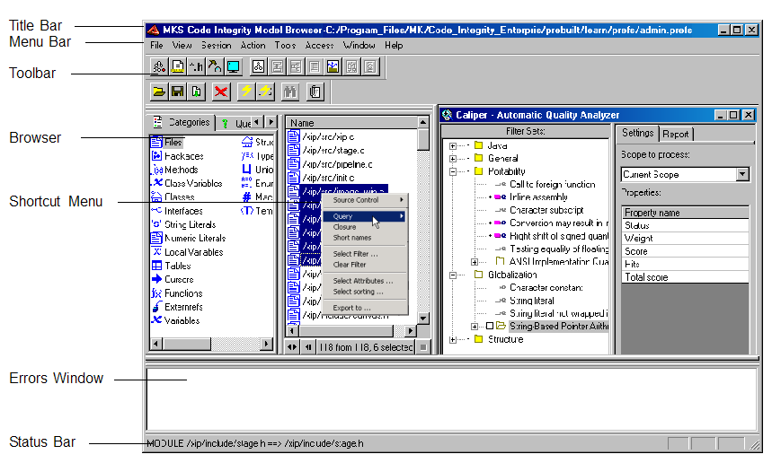

DIScover 7.5
User Guide for Windows
Contains Java™ software developed by Sun Microsystems, Inc. © Copyright Sun Microsystems, Inc. All Rights
Reserved. Java and Java-based marks are trademarks or registered trademarks of Sun Microsystems, Inc. in the United
States and other countries.


Table of Contents
Chapters
1
Welcome to DIScover. . . . . . . . . . 1
About This Guide . . . . . . . . . . . . . . . . . . . . . . . . . . . . . . . . . . . . . . . . . . . 2
Related Documentation . . . . . . . . . . . . . . . . . . . . . . . . . . . . . . . . . . . . . . 4
Typographical Conventions . . . . . . . . . . . . . . . . . . . . . . . . . . . . . . . . . . 6
What’s New in This Release . . . . . . . . . . . . . . . . . . . . . . . . . . . . . . . . . . 7
Roles . . . . . . . . . . . . . . . . . . . . . . . . . . . . . . . . . . . . . . . . . . . . . . . . . . . . . . 7
Assumptions . . . . . . . . . . . . . . . . . . . . . . . . . . . . . . . . . . . . . . . . . . . . . . . 7
Getting Help . . . . . . . . . . . . . . . . . . . . . . . . . . . . . . . . . . . . . . . . . . . . . . . 8
Professional Services . . . . . . . . . . . . . . . . . . . . . . . . . . . . . . . . . . . . . . . . 9
Documentation Feedback . . . . . . . . . . . . . . . . . . . . . . . . . . . . . . . . . . . 10
Where To Go From Here . . . . . . . . . . . . . . . . . . . . . . . . . . . . . . . . . . . . 11
2
Understanding DIScover . . . . . . . . . . . . . . . . . . . . . . 13
DIScover Overview . . . . . . . . . . . . . . . . . . . . . . . . . . . . . . . . . . . . 14
Features and Benefits . . . . . . . . . . . . . . . . . . . . . . . . . . . . . . . . . . . 14
Core Concepts . . . . . . . . . . . . . . . . . . . . . . . . . . . . . . . . . . . . . . . . . . . . . 15
Repository . . . . . . . . . . . . . . . . . . . . . . . . . . . . . . . . . . . . . . . . . . . . 15
Information Model . . . . . . . . . . . . . . . . . . . . . . . . . . . . . . . . . . . . . 15
Project . . . . . . . . . . . . . . . . . . . . . . . . . . . . . . . . . . . . . . . . . . . . . . . . 16
Model Server . . . . . . . . . . . . . . . . . . . . . . . . . . . . . . . . . . . . . . . . . . 16
Build Server . . . . . . . . . . . . . . . . . . . . . . . . . . . . . . . . . . . . . . . . . . . 16
Entities and Instances . . . . . . . . . . . . . . . . . . . . . . . . . . . . . . . . . . . 16
Queries . . . . . . . . . . . . . . . . . . . . . . . . . . . . . . . . . . . . . . . . . . . . . . . 17
DIScover Components . . . . . . . . . . . . . . . . . . . . . . . . . . . . . . . . . 17
Model Browser . . . . . . . . . . . . . . . . . . . . . . . . . . . . . . . . . . . . . . . . 17
Developer Xpress . . . . . . . . . . . . . . . . . . . . . . . . . . . . . . . . . . . . . . 18
Access . . . . . . . . . . . . . . . . . . . . . . . . . . . . . . . . . . . . . . . . . . . . . . . . 18
DIScover in the Enterprise Environment . . . . . . . . . . . . . . . . . . 19
3
Getting Started With DIScover . . . . . . . . . . . . . . . . . 23
System Requirements . . . . . . . . . . . . . . . . . . . . . . . . . . . . . . . . . . . . . . . 24
Supported Languages . . . . . . . . . . . . . . . . . . . . . . . . . . . . . . . . . . 24
Supported Compilers . . . . . . . . . . . . . . . . . . . . . . . . . . . . . . . . . . . 25
Integrated Development Environment Support . . . . . . . . . . . . 25
Configuration Management Support . . . . . . . . . . . . . . . . . . . . . . 25
Before You Install . . . . . . . . . . . . . . . . . . . . . . . . . . . . . . . . . . . . . . . . . . 26
Installing DIScover . . . . . . . . . . . . . . . . . . . . . . . . . . . . . . . . . . . . 26
Uninstalling DIScover . . . . . . . . . . . . . . . . . . . . . . . . . . . . . . . . . . 28
i
Table of Contents
Your Model Environment . . . . . . . . . . . . . . . . . . . . . . . . . . . . . . . . . . . 29
Before Starting a Session . . . . . . . . . . . . . . . . . . . . . . . . . . . . . . . . . . . . 29
Starting the Model Browser . . . . . . . . . . . . . . . . . . . . . . . . . . . . . . . . . . 30
Connecting to an Information Model . . . . . . . . . . . . . . . . . . . . . . . . . 30
Choosing a Configuration Management System . . . . . . . . . . . . . . . . 33
Choosing an IDE . . . . . . . . . . . . . . . . . . . . . . . . . . . . . . . . . . . . . . . . . . . 34
Post-Installation Integration . . . . . . . . . . . . . . . . . . . . . . . . . . . . . 35
Setting Up the Integrity Manager Integration . . . . . . . . . . . . . . . . . . 37
Closing a DIScover Session . . . . . . . . . . . . . . . . . . . . . . . . . . . . . 37
4
The Model Browser Interface. . . . . . . . . . . . . . . . . . . . . . . 39
The Model Browser . . . . . . . . . . . . . . . . . . . . . . . . . . . . . . . . . . . . . . . . 40
Title Bar . . . . . . . . . . . . . . . . . . . . . . . . . . . . . . . . . . . . . . . . . . . . . . 40
Menu Bar . . . . . . . . . . . . . . . . . . . . . . . . . . . . . . . . . . . . . . . . . . . . . 40
Toolbar . . . . . . . . . . . . . . . . . . . . . . . . . . . . . . . . . . . . . . . . . . . . . . . 41
Browser . . . . . . . . . . . . . . . . . . . . . . . . . . . . . . . . . . . . . . . . . . . . . . . 41
Shortcut Menu . . . . . . . . . . . . . . . . . . . . . . . . . . . . . . . . . . . . . . . . . 44
Errors Window . . . . . . . . . . . . . . . . . . . . . . . . . . . . . . . . . . . . . . . . 44
Status Bar . . . . . . . . . . . . . . . . . . . . . . . . . . . . . . . . . . . . . . . . . . . . . 44
Icons and Graphics . . . . . . . . . . . . . . . . . . . . . . . . . . . . . . . . . . . . . . . . . 45
Mouse Operations . . . . . . . . . . . . . . . . . . . . . . . . . . . . . . . . . . . . . . . . . . 47
5
Querying an Information Model. . . . . . . . . . . . . . . . . . . . . 49
Querying Your Source Code . . . . . . . . . . . . . . . . . . . . . . . . . . . . . . . . . 50
Applying Closure . . . . . . . . . . . . . . . . . . . . . . . . . . . . . . . . . . . . . . 51
Displaying Short Names . . . . . . . . . . . . . . . . . . . . . . . . . . . . . . . . 51
Notation . . . . . . . . . . . . . . . . . . . . . . . . . . . . . . . . . . . . . . . . . . . . . . 52
Nested Structure Notation . . . . . . . . . . . . . . . . . . . . . . . . . . . . . . . 52
Viewing Instances . . . . . . . . . . . . . . . . . . . . . . . . . . . . . . . . . . . . . . . . . . 53
Filtering Results . . . . . . . . . . . . . . . . . . . . . . . . . . . . . . . . . . . . . . . . . . . 54
Basic Filtering . . . . . . . . . . . . . . . . . . . . . . . . . . . . . . . . . . . . . . . . . 55
Advanced Filtering . . . . . . . . . . . . . . . . . . . . . . . . . . . . . . . . . . . . . 57
Saving a Filter . . . . . . . . . . . . . . . . . . . . . . . . . . . . . . . . . . . . . . . . . 57
Applying a Saved Filter . . . . . . . . . . . . . . . . . . . . . . . . . . . . . . . . . 57
Displaying Entity Attributes . . . . . . . . . . . . . . . . . . . . . . . . . . . . . 58
Sorting Entity Attributes . . . . . . . . . . . . . . . . . . . . . . . . . . . . . . . . 58
Exporting Query Results . . . . . . . . . . . . . . . . . . . . . . . . . . . . . . . . . . . . 60
Working With Groups . . . . . . . . . . . . . . . . . . . . . . . . . . . . . . . . . . . . . . 60
Creating a Group . . . . . . . . . . . . . . . . . . . . . . . . . . . . . . . . . . . . . . 61
Deleting a Group . . . . . . . . . . . . . . . . . . . . . . . . . . . . . . . . . . . . . . . 62
Adding Entities to a Group . . . . . . . . . . . . . . . . . . . . . . . . . . . . . . 62
Removing Entities From a Group . . . . . . . . . . . . . . . . . . . . . . . . . 63
Viewing Group Contents . . . . . . . . . . . . . . . . . . . . . . . . . . . . . . . . 63
Finding a Group . . . . . . . . . . . . . . . . . . . . . . . . . . . . . . . . . . . . . . . 63
Exporting Group Contents . . . . . . . . . . . . . . . . . . . . . . . . . . . . . . 64
ii
u s e r g u i d e

Table of Contents
Group Operations . . . . . . . . . . . . . . . . . . . . . . . . . . . . . . . . . . . . . . 64
Sample Group Operations . . . . . . . . . . . . . . . . . . . . . . . . . . . . . . . 65
6
Working With Graphical Views . . . . . . . . . . . . . . . . . . . . . 67
Graphical Views . . . . . . . . . . . . . . . . . . . . . . . . . . . . . . . . . . . . . . . . . . . 68
General View Options . . . . . . . . . . . . . . . . . . . . . . . . . . . . . . . . . . 68
Tree Diagram . . . . . . . . . . . . . . . . . . . . . . . . . . . . . . . . . . . . . . . . . . . . . . 69
Opening a Tree Diagram . . . . . . . . . . . . . . . . . . . . . . . . . . . . . . . . 69
Tree Diagram Menu Options . . . . . . . . . . . . . . . . . . . . . . . . . . . . 70
Inheritance View . . . . . . . . . . . . . . . . . . . . . . . . . . . . . . . . . . . . . . . . . . . 71
Opening an Inheritance View . . . . . . . . . . . . . . . . . . . . . . . . . . . . 71
Inheritance Menu Options . . . . . . . . . . . . . . . . . . . . . . . . . . . . . . . 73
Outline View . . . . . . . . . . . . . . . . . . . . . . . . . . . . . . . . . . . . . . . . . . . . . . 76
Opening an Outline View . . . . . . . . . . . . . . . . . . . . . . . . . . . . . . . 76
Entity Relation Diagram . . . . . . . . . . . . . . . . . . . . . . . . . . . . . . . . . . . . 77
Opening an Entity Relation Diagram . . . . . . . . . . . . . . . . . . . . . 77
Entity Relation Diagram Menu Options . . . . . . . . . . . . . . . . . . . 78
Data Chart . . . . . . . . . . . . . . . . . . . . . . . . . . . . . . . . . . . . . . . . . . . . . . . . 81
Opening a Data Chart . . . . . . . . . . . . . . . . . . . . . . . . . . . . . . . . . . 81
Data Chart Menu Options . . . . . . . . . . . . . . . . . . . . . . . . . . . . . . . 82
Flow Chart . . . . . . . . . . . . . . . . . . . . . . . . . . . . . . . . . . . . . . . . . . . . . . . . 84
Opening a Flow Chart . . . . . . . . . . . . . . . . . . . . . . . . . . . . . . . . . . 84
Call Graph . . . . . . . . . . . . . . . . . . . . . . . . . . . . . . . . . . . . . . . . . . . . . . . . 85
Opening a Call Graph . . . . . . . . . . . . . . . . . . . . . . . . . . . . . . . . . . 85
7
Working With Source Code . . . . . . . . . . . . . . . . . . . . . . . . 89
Performing Detailed Querying . . . . . . . . . . . . . . . . . . . . . . . . . . . . . . . 90
Transferring Entities to DIScover . . . . . . . . . . . . . . . . . . . . 90
Refining Your Source Analysis . . . . . . . . . . . . . . . . . . . . . . . . . . . 90
Launching Your Integrated IDE . . . . . . . . . . . . . . . . . . . . . . . . . . 91
Working With IDEs . . . . . . . . . . . . . . . . . . . . . . . . . . . . . . . . . . . . . . . . 91
Microsoft Visual Studio . . . . . . . . . . . . . . . . . . . . . . . . . . . . . . . . . 92
Emacs . . . . . . . . . . . . . . . . . . . . . . . . . . . . . . . . . . . . . . . . . . . . . . . . 92
gVim . . . . . . . . . . . . . . . . . . . . . . . . . . . . . . . . . . . . . . . . . . . . . . . . . 93
Borland JBuilder . . . . . . . . . . . . . . . . . . . . . . . . . . . . . . . . . . . . . . . 94
Working With Configuration Management Systems . . . . . . . . . . . . 94
Using MKS Source Integrity Enterprise Edition . . . . . . . . . . . . 95
Using Rational ClearCase . . . . . . . . . . . . . . . . . . . . . . . . . . . . . . . 97
8
Impact Analysis. . . . . . . . . . . . . . . . . . . . . . . . . . . . . . . . . . 99
Why Use Impact Analysis? . . . . . . . . . . . . . . . . . . . . . . . . . . . . . . . . . 100
Performing an Impact Analysis . . . . . . . . . . . . . . . . . . . . . . . . . . . . . 101
Impact Analysis Options . . . . . . . . . . . . . . . . . . . . . . . . . . . . . . . . . . . 104
The Impact Analysis Report . . . . . . . . . . . . . . . . . . . . . . . . . . . . . . . . 111
Generating an Impact Analysis Report . . . . . . . . . . . . . . . . . . . 111
Saving an Impact Analysis Report . . . . . . . . . . . . . . . . . . . . . . . 113
iii
Table of Contents
Printing an Impact Analysis Report . . . . . . . . . . . . . . . . . . . . . . 113
Attaching Impact Analysis Reports to Integrity Manager Issues . 113
9
Caliper . . . . . . . . . . . . . . . . . . . . . . . . . . . . . . . . . . . . . . . . 115
What Is Caliper? . . . . . . . . . . . . . . . . . . . . . . . . . . . . . . . . . . . . . . . . . . 116
Quality Rule Queries . . . . . . . . . . . . . . . . . . . . . . . . . . . . . . . . . . 116
Enterprise Quality Management . . . . . . . . . . . . . . . . . . . . . . . . 117
Caliper Sessions . . . . . . . . . . . . . . . . . . . . . . . . . . . . . . . . . . . . . . . . . . . 118
Caliper Window Components . . . . . . . . . . . . . . . . . . . . . . . . . . . . . . 120
The Query Tree . . . . . . . . . . . . . . . . . . . . . . . . . . . . . . . . . . . . . . . 120
Settings and Reports . . . . . . . . . . . . . . . . . . . . . . . . . . . . . . . . . . . 122
Quality Scores . . . . . . . . . . . . . . . . . . . . . . . . . . . . . . . . . . . . . . . . . . . . 125
Query Scores . . . . . . . . . . . . . . . . . . . . . . . . . . . . . . . . . . . . . . . . . 125
Filter Set Scores . . . . . . . . . . . . . . . . . . . . . . . . . . . . . . . . . . . . . . . 125
Total Quality Score . . . . . . . . . . . . . . . . . . . . . . . . . . . . . . . . . . . . 126
Quality Assessment Reports . . . . . . . . . . . . . . . . . . . . . . . . . . . . . . . . 126
Saving a Quality Assessment Report . . . . . . . . . . . . . . . . . . . . . 127
Printing a Quality Assessment Report . . . . . . . . . . . . . . . . . . . . 127
Attaching Quality Assessment Reports to
Integrity Manager Issues . . . . . . . . . . . . . . . . . . . . . . . . . . . . . . . . . . . 128
10 Metrics . . . . . . . . . . . . . . . . . . . . . . . . . . . . . . . . . . . . . . . . 131
Available Metrics . . . . . . . . . . . . . . . . . . . . . . . . . . . . . . . . . . . . . . . . . 132
Displaying Metrics . . . . . . . . . . . . . . . . . . . . . . . . . . . . . . . . . . . . 133
Creating a Complex Query . . . . . . . . . . . . . . . . . . . . . . . . . . . . . 135
11 Dormant . . . . . . . . . . . . . . . . . . . . . . . . . . . . . . . . . . . . . . . 137
Overview of Dormant . . . . . . . . . . . . . . . . . . . . . . . . . . . . . . . . . . . . . 138
Selecting a Root Entity . . . . . . . . . . . . . . . . . . . . . . . . . . . . . . . . . . . . . 138
Project Scope . . . . . . . . . . . . . . . . . . . . . . . . . . . . . . . . . . . . . . . . . 138
Entity Reference Level . . . . . . . . . . . . . . . . . . . . . . . . . . . . . . . . . 138
Performing a Dormant Analysis . . . . . . . . . . . . . . . . . . . . . . . . . . . . . 139
12 Simplify.h. . . . . . . . . . . . . . . . . . . . . . . . . . . . . . . . . . . . . . 141
Overview of Simplify.h . . . . . . . . . . . . . . . . . . . . . . . . . . . . . . . . . . . . 142
Simplifying a Source File’s Header Files . . . . . . . . . . . . . . . . . . . . . . 143
Appendixes
A
Developer Xpress . . . . . . . . . . . . . . . . . . . . . . . . . . . . . . 147
Starting Developer Xpress . . . . . . . . . . . . . . . . . . . . . . . . . . . . . . . . . . 148
Configuring Developer Xpress . . . . . . . . . . . . . . . . . . . . . . . . . . . . . . 148
Choosing a Model Server . . . . . . . . . . . . . . . . . . . . . . . . . . . . . . . 149
Choosing a Configuration Management System . . . . . . . . . . . 149
Choosing a Source Mode . . . . . . . . . . . . . . . . . . . . . . . . . . . . . . . 149
Choosing an IDE . . . . . . . . . . . . . . . . . . . . . . . . . . . . . . . . . . . . . . 151
The Developer Xpress Interface . . . . . . . . . . . . . . . . . . . . . . . . . . . . . 152
Basic Functions . . . . . . . . . . . . . . . . . . . . . . . . . . . . . . . . . . . . . . . . . . . 153
iv
u s e r g u i d e

Table of Contents
Finding Items . . . . . . . . . . . . . . . . . . . . . . . . . . . . . . . . . . . . . . . . . 153
Searching a Project Hierarchy . . . . . . . . . . . . . . . . . . . . . . . . . . . 154
Filtering Entity Subsets . . . . . . . . . . . . . . . . . . . . . . . . . . . . . . . . 154
Exiting Developer Xpress . . . . . . . . . . . . . . . . . . . . . . . . . . . . . . 155
Navigating Your Source Code . . . . . . . . . . . . . . . . . . . . . . . . . . . . . . 155
Using the Runtime List . . . . . . . . . . . . . . . . . . . . . . . . . . . . . . . . 156
Querying Entities In Your Source Code . . . . . . . . . . . . . . . . . . 156
Enabling Icons . . . . . . . . . . . . . . . . . . . . . . . . . . . . . . . . . . . . . . . . 158
Groups . . . . . . . . . . . . . . . . . . . . . . . . . . . . . . . . . . . . . . . . . . . . . . 158
Using Configuration Management Systems . . . . . . . . . . . . . . . . . . . 160
Using Submission Check . . . . . . . . . . . . . . . . . . . . . . . . . . . . . . . . . . . 161
Customizing Developer Xpress . . . . . . . . . . . . . . . . . . . . . . . . . . . . . 164
Editing an Application File . . . . . . . . . . . . . . . . . . . . . . . . . . . . . 164
Customizing the Menu Bar . . . . . . . . . . . . . . . . . . . . . . . . . . . . . 165
Troubleshooting . . . . . . . . . . . . . . . . . . . . . . . . . . . . . . . . . . . . . . . . . . 167
B
Glossary of Terms . . . . . . . . . . . . . . . . . . . . . . . . . . . . . . 169
Index . . . . . . . . . . . . . . . . . . . . . . . . . . . . . . . . . . . . . . . . . . . . 175
v
Table of Contents
vi
u s e r g u i d e


Welcome to DIScover
Enterprise Edition
1
An Introduction to the Windows User Guide
DIScover (hereafter referred to as DIScover) is a powerful browsing and modeling tool that enables you to
navigate and analyze your software development project’s source code.
DIScover operates on a database called the information model that
captures the relationships between all entities in the code base. This
provides a detailed view and high-level architectural perspective of the
entire application for you and your development team.
As projects mature, source code grows in size and complexity, resulting in
poor quality and long release cycles. As a software developer, you have
many day-to-day tasks (for example, navigation, analysis, code review)
that are tedious, difficult to perform, and often do not yield complete or
accurate results.
DIScover automates labor-intensive tasks by providing you with
knowledge about your source code, faster than traditional techniques,
facilitating understanding of the software at all levels. By improving
overall comprehension, DIScover frees your time for critical tasks and
improves your team’s overall productivity.
This chapter discusses the following topics:
“About This Guide” on page 2
“Related Documentation” on page 4
“Typographical Conventions” on page 6
“Roles” on page 7
“Assumptions” on page 7
“Getting Help” on page 8
“Professional Services” on page 9
“Documentation Feedback” on page 10
“Where To Go From Here” on page 11
1
Chapter 1: Welcome to DIScover
About This Guide
This guide is designed for DIScover users. It explains how to use all
the features of the DIScover model browser and Developer Xpress
client.
The following section details individual chapter content:
Chapter 2: “Understanding DIScover” (page 13)
Introduces the DIScover suite of tools, including the Browser,
Quality Analysis, Developer Xpress, and Access, and highlights the
features and benefits of each. It also presents key DIScover
concepts and terminology, and describes a typical enterprise
deployment.
Chapter 3: “Getting Started With DIScover” (page 23)
Explains how to install and uninstall the DIScover client, launch
the DIScover model browser and connect to an information
model, how to configure preferences for CM system and IDE
integrations, and quitting a DIScover session.
Chapter 4: “The Model Browser Interface” (page 39)
Provides a detailed description of the DIScover Browsing
environment, including menus, panes, views, and the features
available in each.
Chapter 5: “Querying an Information Model” (page 49)
Expands on the basics of browsing to allow you to create functional
and efficient queries of your information model, organize and store
results, and perform more complex DIScover operations.
Chapter 6: “Working With Graphical Views” (page 67)
Explains how to view your source code in various graphical views,
such as call trees, entity relation diagrams, and call graphs.
Chapter 7: “Working With Source Code” (page 89)
Explains how to use your IDE within the Browser to acquire more
specific information about a selected entity, how to perform direct
edits to your source code, and save your changes with your
Configuration Management System.
Chapter 8: “Impact Analysis” (page 99)
Explains how to use the Impact Analysis feature to understand how
proposed changes to your code base will impact other source files and
entities.
2
u s e r
g u i d e

About This Guide
Chapter 9: “Caliper” (page 115)
Explains how to apply quality filters to your source code and collect
information about your code’s adherence to quality standards and
metrics.
Chapter 10: “Metrics” (page 131)
Explains how to use the metrics that are generated as part of your
information model to make intelligent decisions about your source
code. It provides a detailed description of all available metrics and
how to display them on a permanent basis or apply them in formal
queries.
Chapter 11: “Dormant” (page 137)
Explains how to use the Dormant Analysis feature to identify and
remove obsolete code constructs in your source.
Chapter 12: “Simplify.h” page 141
Explains how to use the Simplify feature to identify and streamline
header file redundancy and remove obsolete header files for the sake
of simplifying your code base.
Appendix A: “Developer Xpress” (page 147)
Describes how to use the Developer Xpress client, an easy-to-use
browsing and query tool that enables you to navigate through your
application’s project structure and query your information model.
Appendix B: “Glossary of Terms” (page 169)
Describes common DIScover terms.
3
Chapter 1: Welcome to DIScover
Related Documentation
To provide you with the most convenient means of retrieving information,
product documentation is available in several formats: print and Adobe
Acrobat’s Portable Document Format (PDF).
Documentation
Print
PDF
Online
DIScover
Yes
Yes
Yes
Installation and Administration Guide
DIScover User
No
Yes
Yes
Guide for Windows
DIScover User
No
Yes
Yes
Guide for UNIX
DIScover
No
Yes
Yes
Access Guide
Release Notes
No
No
Yes
PDF files are located in the \pdf subdirectory of the distribution CD. To
view them, you must have Adobe Acrobat Reader™ installed on your
machine. You can install the reader by running the setup program in the
\acrobat subdirectory on the CD. Once you have installed the reader,
whenever you open a PDF file the reader starts automatically.
You can access online help from within the model browser in the following
ways:
Selecting Help > Contents.
Press F1.
NOTE
The online help is not context-sensitive.
From the model browser online help, you can display the Access online
help by clicking
. To display the model browser online help again, click
in the Access online help.
4
u s e r
g u i d e

Related Documentation
In addition to the DIScover Enterprise Edition User Guide for Windows,
the other documentation included in this release is as follows:
DIScover Installation and Administration Guide
provides installation instructions for DIScover; an overview of
DIScover concepts and features; and information on creating,
building, and managing information models.
DIScover User Guide for UNIX explains how to
use all the features of the DIScover model browser and
Developer Xpress client on the UNIX platform.
DIScover Access Guide provides platform-
independent instructions for using Access, a TCL-based programming
language for interfacing with the DIScover database and
customizing DIScover functionality to suit the needs of your
environment.
Online release notes provide the most up-to-date details about this
release. You should review these notes as they may contain
information that only became available after the printed
documentation went to press. You can read the release notes in the
CD Browser or as HTML documents in a Web browser.
NOTE
5
Chapter 1: Welcome to DIScover
Typographical Conventions
Throughout this guide, the following typographical conventions identify
the features, functions, and components of DIScover:
Items in Documentation
Appear as
Menus, commands
Tools > Caliper
Drop-down menus
the Session command
Dialog boxes, features
Edit Options, Cancel, OK
Screen information, messages
Enter the new group name:
Environment Variables
TMPDIR
Path names
c:\scrint\work
New terms
appear in italics the first time
Keyboard keys
appear in caps, for example ENTER
Keyboard shortcuts
Keyboard: ALT, I, N
NOTE
A note provides you with information that supplements the key points of the
subject. A note may also supply information that applies only in particular
cases.
IMPORTANT
An important note provides you with information that is essential for
completing a task.
CAUTION
A caution note advises you about situations that have the potential to result in
a loss of data.
6
u s e r
g u i d e

What’s New in This Release
What’s New in This Release
For more detailed information on the following features, see the
CodeIntegrityWhatsNew.pdf located in the \pdf subdirectory of the
distribution CD.
simplified build scripts
more robust installation
administration GUI
incremental model builds
additional impact queries
integration with MKS Integrity Manager
print/save/export capabilities
Roles
There are two main roles when using DIScover: The administrator
installs and configures DIScover, builds and validates information
models, starts and stops servers, performs regular housekeeping for model
builds, clears out old models, and sets up new DIScover users. The
user is anyone who needs to work with DIScover information models.
Assumptions
Before using DIScover, we assume the following about your
knowledge and experience:
You fully understand the hardware platforms and operating systems
you are installing DIScover on, that is, Windows, Solaris, and
HP-UX.
You understand the programming languages used in your source
code, that is, ANSI C/C++, Visual C++, K&R C, Java, Oracle SQL,
Informix SQL, and Sybase SQL.
You understand the compilers used to build your software projects,
that is, Microsoft Visual C++, Sun cc, Sun WorkShop C++, GNU C/
C++, HP cc, HP aC++, and Sun SDK Java.
7
Chapter 1: Welcome to DIScover
If you are using an Integrated Development Environment (IDE) with
DIScover, for example, Borland JBuilder, you understand how to
use it.
If you are using a Configuration Management (CM) system with DIScover, for example, Source Integrity, you understand how to use it.
Getting Help
8
u s e r
g u i d e

10
u s e r
g u i d e

Where To Go From Here
Where To Go From Here
To Do This …
See …
Install DIScover.
“Installing DIScover” on page 26
Start the model browser.
“Starting the Model Browser” on
page 30
Set up your Configuration
“Choosing a Configuration
Management (CM) system to work
Management System” on page 33
with DIScover.
Set up your Integrated Development
“Choosing an IDE” on page 34
Environment (IDE) to work with
DIScover.
Learn about the model browser
“The Model Browser” on page 40
interface.
Query your source code.
“Querying Your Source Code” on
page 50
Use your IDE with DIScover.
“Working With IDEs” on page 91
Use your CM with DIScover.
“Working With Configuration
Management Systems” on page 94
Understand the impact of proposed
“Impact Analysis” on page 99
changes to your source code.
Assess the quality of your source
“Caliper” on page 115
code.
Measure the complexity of your source
“Metrics” on page 131
code.
Identify unused entities in your source
“Dormant” on page 137
code.
Manage header files in your source
“Simplify.h” on page 141
code.
Learn how to use Developer Xpress.
“Developer Xpress” on page 147
Learn DIScover terms.
“Glossary of Terms” on page 169
11
Chapter 1: Welcome to DIScover
12
u s e r
g u i d e


Understanding DIScover
An Overview of Features and Concepts
KEY TERMS: model browser, project, information model, pmod, entity, instance,
model server, build server, query, Developer Xpress, Access
DIScover is a unique set of tools that allows you
to gain an unprecedented understanding of your source code so that you
may effectively continue development and maintain quality standards as
you complete your software projects. This chapter details DIScover
features and functionality and introduces you to some key concepts in
working with the Enterprise Edition of the product.
This chapter covers the following topics:
“DIScover Overview” on page 14
“Core Concepts” on page 15
“DIScover Components” on page 17
“DIScover in the Enterprise Environment” on page 19
13
Chapter : Understanding DIScover
DIScover Overview
DIScover is a complete enterprise-wide, software development
information system comprised of a series of tools created to address some
of today’s most challenging software development problems. DIScover examines source code and related artifacts, creating an accessible,
scalable, common database of information (the information model). The
information model captures the relationships among all entities resulting
in a high-level architectural perspective and a detailed view of the entire
application, which can be shared across the organization and monitored
over time. DIScover enables software professionals to more
thoroughly understand their software systems, to more efficiently and
accurately effect changes to a large body of source code, and to more easily
re-engineer or reorganize a complex software system, thus improving
organizational productivity and quality while reducing cost and time to
market.
DIScover is a solution written for developers, by developers who
understand the unique challenges of authoring and understanding
complex bodies of source code in a team environment. As a software
developer, you know that it can be difficult to decipher existing bodies of
source or make intelligent decisions on future actions with little supporting
data, but these tasks are often necessary before you can effectively
complete your piece of a development project.
DIScover combines the feature-rich Browser and Quality Analysis
interfaces with special purpose Access and Developer Xpress clients to
create a robust, fully customizable code comprehension and quality system
to meet the needs of your development environment.
Features and
DIScover’s rich, sophisticated picture of your source code allows you
to:
Benefits
comprehend and manage your software development assets
standardize and automate your code quality analysis
The ability to quickly and completely comprehend existing code saves
time, allowing you to focus on development. Software projects can be
completed in a shorter time frame, at a lower cost, and with optimum
flexibility.
Impact analysis gives your team a distinct advantage—the ability to
understand how proposed changes will affect the rest of the code base
before you make them, break something, and have to remediate. Impact
analysis in fact reduces the introduction of new bugs or development
issues by 50 percent.
14
u s e r
g u i d e

Core Concepts
Quality filters allow you to identify specific patterns in your code, and
automate coding standards. This systematic, early intervention technique
allows you to find problems in your source code—even in projects with
millions of lines of code—before your customers do, and results in dramatic
time and cost savings for your team.
Core Concepts
The following concepts are key to understanding how DIScover
works:
Repository
Information Model
Project
Model Server
Build Server
Entities and Instances
Queries
Repository
A repository is the directory containing available information models and
model versions (previously referred to as DISIM).
Information
The key to DIScover’s unique capabilities is a structure called the
information model (often referred to as model in this guide). This data
Model
repository is created when DIScover examines your source, parses the
code, and instead of creating object files, saves it in two language-
independent formats: the Source Mode Tree (SMT) and the Abstract Syntax
Tree (AST).
The parsing process recognizes individual code constructs from your
source (such as each function, class, variable, and so on) as a single entity
(described in the next section). A catalog of all your code’s symbols, line
numbers, and offsets is maintained in the SMT, while the AST retains a
richer structure of data that tracks information about these entities,
including their attributes and the relations between them. Physically, an
index of symbols and tables of relations among symbols is stored in pmod
files.
In the enterprise environment, information models are routinely created
and maintained by the DIScover administrator so individual users
can simply connect to an available model.
15
Chapter : Understanding DIScover
Project
A DIScover project defines the content of an individual information
model, and is designed to mirror your organization’s software
development projects. Selecting a project sets the scope of your browsing
activities, as only files and entities included in that project are available for
browsing and querying.
When building an information model, the DIScover administrator
decides which files to include in the model; this decision is based on which
individual software development projects need to be modeled and how
that project is divided. For example, an organization that is completing
development on a software application called X might actually have a
main development project called X, and smaller branches of development
individually identified by unique project names, XY and XZ.
There are several information model scenarios to fit this scheme: a single
information model that includes all source files from project X; in this case,
the information model would have a main project with all source files and
subprojects that contained only those files from the individual branches of
development. You could also have a smaller information model that
contains only the source files from project XY or XZ; in this case, you
would only have one project containing the files from that branch of
development.
We recommend checking with your administrator to understand how
models have been created in your environment, verify the names of
projects that are available to you for browsing and querying, and possibly
request that a new model be created for a project you are working on.
Model Server
A model server is a process that runs on a host machine serving the DIScover enterprise environment. This process makes information models
readily and conveniently available to end users who connect through a
Developer Xpress client or Access. Model servers communicate directly
with the information model data structure.
Build Server
Similar to a model server, a build server runs on a host machine. Its purpose,
however, is to manage Submission Check communications between the
information model and your source code. A feature of the Developer
Xpress client, Submission Check verifies the source code file’s existence in
the information model and allows you to apply standard quality filters
against it prior to its check in to your SCM system.
Entities and
The term entity is used to describe any individual element of your source
code maintained in the AST. An entity may be as large as an entire file or as
Instances
small as a variable. In the model browser, entities are categorized by name:
file, function, class, variable, method, enum, string. Selecting one category
displays all entities of that type that appear in your source code.
16
u s e r
g u i d e

DIScover Components
The term instance refers to a single occurrence of an entity in your source. A
single entity may have multiple instances. For example, a single function
may be referenced in multiple source files; in this case, the function has a
single instance in each place in the source where it is called.
Queries
The query is the central activity of DIScover browsing tools. A query
allows you to discover information about your source code—”show me
where this function is defined in my source,” or ”show me everywhere this
class is used.” A single query can tell you such things as the number of
entities of a specific type that occur in your source, location of a specific
entity, how it is used, and how it relates to other entities in your source.
You can also employ a series of queries to create a more complex analysis
of your source.
DIScover offers a vast list of predefined queries for browsing
activities, as well as the set of queries specifically related to code quality
standards that are used with DIScover.
You can execute a query using one of several methods: through making
selections in the Browser window, through your chosen integrated
development environment (IDE), though Developer Xpress, or through an
Access command line.
DIScover Components
The following components make up DIScover:
Model Browser
Developer Xpress
Access
Model Browser
The model browser is the primary graphical user interface (GUI) used for
exploring and querying your information model. It allows you to scan
existing projects and to browse your information model to collect data
about your source. Model browser advantages include:
direct communication with your information model
graphical interpretation of the relationships between source code
entities
The components of the GUI are described in detail in “The Model Browser
Interface” on page 39.
17
Chapter : Understanding DIScover
Developer
Developer Xpress is the lightweight client that allows you to navigate
through your application’s project structure and query your information
Xpress
model. This approach is efficient and offers quick results. The Developer
Xpress advantages include:
no setup required
fast startup
little or no user training required
automatic integration with your IDE
identical GUI for UNIX and Windows
For more information on using Developer Xpress, see “Developer Xpress”
on page 147.
Access
Access is a TCL-based language that allows you to write scripts that
perform complex operations in DIScover. Access communicates
directly with the information model through a command line interface in
the model browser and enables enterprise-level features and functionality
not available through the model browser. Access advantages include:
sophisticated navigation and search capabilities for the Abstract
Syntax Tree via Tree Pattern Matching (TPM)
automated global change propagation
ability to customize your environment with Access scripts
create custom queries
Not every DIScover user needs to learn or use Access; however, if you
are an Access user, the Access menu in the Browser provides quick
shortcuts to the Access environment, such as opening an Access window,
browsing the AST, performing Tree Pattern Matching routines, executing
queries and filters, and reporting results.
For more information on using Access, see the DIScover
Edition Access Guide.
18
u s e r
g u i d e

DIScover in the Enterprise Environment
DIScover in the Enterprise
Environment
DIScover deployment is flexible to suit the needs of the
most complex environments, allowing you to combine the numbers of
Browsers, Developer Xpress clients, and model servers that is right for
your organization.
While it is the responsibility of your DIScover administrator to set up
the environment, create models, and configure clients, it is important to
understand the basic structure of DIScover in the enterprise
environment so that you are aware of how to communicate with your
information model. This knowledge also helps to prepare you with the
questions to ask about connection specifics in your environment once DIScover is deployed.
19

Chapter : Understanding DIScover
DIScover information models are built based on projects and
subprojects maintained in your organization’s SCM (software
configuration management) system. Administrators build models using
the administration client (previously, a series of procedures known as
DISIM (Discover Information Model) were used). Once created, the model
resides in a raw data structure on the host machine. The DIScover
host machine makes DIScover data available in two ways:
Directly through the information model data structure—supports
Browser clients. Browser clients connect to the information model
through a file system connection.
20
u s e r
g u i d e

DIScover in the Enterprise Environment
Through the model server—supports Developer Xpress client and
Access. Developer Xpress and Access clients connect to the model
server via TCP/IP.
Clients also directly access their source code files, most often through your
configuration management system. Integration with common IDEs such as
Emacs and gVim and your Configuration Management (CM) system itself
allow them to check out, manipulate, and check files from within their
DIScover clients. In addition, if a direct connection to source code is
not supported (as in the case of a firewall), end users are also able to use
their Developer Xpress clients to access a portable, read-only copy of an
information model’s source code files available through the model server.
Another host machine, usually separate from the primary host, is also used
to deploy the build server, which manages Submission Check for
Developer Xpress clients. The build server communicates both with source
files (through the CM system) and with the model server host machine.
21
Chapter : Understanding DIScover
22
u s e r
g u i d e


Getting Started With DIScover
3
Starting, Configuring, and Ending a Session
A successful DIScover deployment involves a central
installation of DIScover, and installation and configuration of one or
more clients. Users can connect to DIScover host machines using a
Model Browser client via NFS or using a Developer Xpress client via TCP/
IP.
This chapter covers the following topics:
“System Requirements” on page 24
“Before You Install” on page 26
“Installing DIScover” on page 26
“Uninstalling DIScover” on page 28
“Your Model Environment” on page 29
“Starting the Model Browser” on page 30
“Connecting to an Information Model” on page 30
“Choosing a Configuration Management System” on page 33
“Choosing an IDE” on page 34
“Closing a DIScover Session” on page 37
23
Chapter 3: Getting Started With DIScover
System Requirements
To install and run DIScover, you need:
one of the following Operating Systems:
Windows NT 4.0, Service Pack 6 or higher
Windows 2000, Service Pack 2 or higher
Windows XP+
42 MB of disk space for DIScover (145 MB is recommended)
256 MB of system RAM
180 MB of temporary space
If you use a configuration management (source control) system,
calculate the total disk space used for that source code and triple it (for
C applications) or quadruple it (for C++ applications). Clients who
check out source code from a server should allocate enough free space
in their private areas with these same ratios in mind.
Any computer that you install DIScover on must have TCP/IP
installed. You do not necessarily need a network connection, but DIScover’s client/server software requires that TCP/IP be installed
and active on your PC.
Supported
DIScover supports the following programming languages:
Languages
ANSI C/C++
Visual C++
K&R C
Java
Oracle SQL
Informix SQL
Sybase SQL
24
u s e r
g u i d e

System Requirements
Supported
By default, DIScover works with the following compilers:
Compilers
Microsoft Visual C++
Sun cc
Sun WorkShop C++
GNU C/C++ (also referred to as gcc and g++)
HP cc (including the ANSI mode introduced in HP 11)
HP aC++ (also referred to as aCC)
Sun SDK Java (also referred to as javac)
NOTE
You can customize DIScover to work with software projects based on
other C, C++, or Java compilers.
Integrated
DIScover works with the following integrated development
environments, or IDEs:
Development
Environment
Emacs
Support
gVim
Borland® JBuilder™
Microsoft® Visual Studio®
Configuration
By default, DIScover works with the following Configuration
Management Systems:
Management
Support
MKS Source Integrity Enterprise Edition (hereafter referred to as
Source Integrity)
Rational® ClearCase®
25
Chapter 3: Getting Started With DIScover
Before You Install
Before installing DIScover, you must remove any earlier releases of
DIScover. Failure to do so may cause operational problems later on.
To uninstall an earlier release, follow the uninstall instructions provided in
the product documentation accompanying that release.
To install DIScover, you need the following:
A workstation that is visible to all others on the network that need to
access and run DIScover components.
Write permission to the directory where you want to install
DIScover. If you do not have write permission to the directory
you want to use, you may need to get the root password, or get a
system administrator to assist you.
Installing DIScover
Before you begin, note the following:
The installation procedure for Developer Xpress is incorporated into
the DIScover client installation procedure. Once you configure
your system to run DIScover, you can run Developer Xpress. For
information on using Developer Xpress, see the DIScover
Enterprise Edition User Guide for Windows or UNIX.
If you have multiple versions of Borland JBuilder installed, the
installer prompts you to select a version to integrate with DIScover.
To install DIScover
1 Insert the DIScover CD into the CD drive of the machine where
you want to install DIScover.
A setup window automatically opens.
If it does not, you can start the installation application by double
clicking the Setup.exe icon on the CD.
26
u s e r
g u i d e

Installing DIScover
2 Click Install DIScover EE.
A dialog box appears asking you if you want to run or save the
installation program. The installation program file name is
Setup.exe. Specify either of the following:
Run the installation program directly from its current location
(the CD).
Save the installation program to disk (a location you specify), and
run it from there.
The InstallShield window opens as the files needed for the installation
are extracted, followed by a message notifying you that the
InstallShield Wizard will install DIScover on
your computer.
3 To continue with the installation, click Next.
The License Agreement panel appears.
4 Before you can continue with the installation, you must read the
license agreement and indicate your acceptance.
The installation program allows you to return to a previous panel
without having to exit the program. Click Back to return to the last
panel.
5 To accept the license agreement and continue with the installation,
click Yes.
The Choose Destination Location panel appears.
6 To specify where you want to install DIScover, do one of the
following:
To accept the default path location, click Next. This is
recommended.
To locate the directory where you want to install DIScover,
click Browse.
The Setup Type panel appears.
7 Select Developer Setup.
This option installs the most commonly used DIScover
components and online documentation. No sample models or
administrative tools are included. This option is for DIScover
users who need to use the model browser, Developer Xpress, and/or
Access.
27
Chapter 3: Getting Started With DIScover
8 Click Next.
The Select Program Folder panel appears.
9 Select a program folder by doing one of the following:
Select the default folder.
Type a new folder name.
Select a folder from the existing folders list.
10 Click Next.
DIScover asks you to confirm the options you selected.
11 Click Yes.
DIScover begins installing the necessary components.
NOTE
If changes to your registry were necessary, you may be prompted to restart
your computer. We recommend restarting your computer.
The InstallShield Wizard Complete panel appears.
12 Click Finish.
Uninstalling DIScover
DIScover provides an uninstall application that removes it from your
computer. This application removes all files that DIScover installed.
Unless files were generated below the DIScover directory, the
uninstall procedure removes the DIScover directory.
Log files remain even after an uninstall procedure. The advantage to this is
that any customized preferences or any private information model data
remains intact should you need to reinstall or upgrade DIScover.
Uninstall is an application similar to the installation application.
To uninstall DIScover
1 From the Windows Start menu, select Programs > DIScover >
DIScover > Uninstall DIScover.
The InstallShield Wizard panel appears. The uninstall program
removes all installed components, except any files or folders created
after the installation.
28
u s e r
g u i d e

Your Model Environment
2 To run the uninstall program, click OK.
3 To exit the uninstall program, click Cancel.
Your Model Environment
Before you begin using DIScover, it is important for you to
understand how your administrator has set up the model environment,
including which models are available on what servers.
The frequency that models are built with often reflects your development
cycle and build schedule. For this reason, there may be many versions of
information models available at one time. It is in your best interest to
understand you model naming and version schema so that you connect to
the model that is most appropriate for your work.
A model server supports numerous sessions and clients. You can open the
model you want to browse with the model browser, the lightweight
command-line based Developer Xpress client, or the Access command-line
interface.
The remainder of this guide focuses on using the model browser; more
information on Developer Xpress is presented in Appendix A: “Developer
Xpress” on page 147 and Access is presented in the DIScover
Edition Access Guide.
Before Starting a Session
Before you start a DIScover session, ensure you have the following:
the location of the information model repository containing all valid
information models
the name and version of the information model that you want to
connect to
29
Chapter 3: Getting Started With DIScover
Starting the Model Browser
The model browser is the primary tool for viewing your source code and
performing an analysis of your information model.
To launch the model browser
Select Start > Programs > DIScover > DIScover > DIScover.
The model browser launches.
Connecting to an Information Model
Before you can perform any DIScover operations, you must connect
to a valid information model version.
Note the following:
The model browser and administration client both allow users and
administrators to start and stop model versions. To avoid potential
conflicts, we recommend that model browser users consult their
DIScover administrator about starting and stopping model
versions.
Model versions started from the model browser support graphical
views (i.e. Inheritance Tree view, Call Tree view) in the model
browser; however, model versions started from the administration
client do not support graphical views in the model browser.
To connect to an information model
1 Select File > Connect to server.
The Service Manager dialog box appears.
30
u s e r
g u i d e

Connecting to an Information Model
2 Next to the Repository field, click the browse button (...).
A standard browse dialog box appears.
3 Browse to the directory containing your information model
repository.
4 Click OK.
The Service Manager displays the models in the repository.
31

Chapter 3: Getting Started With DIScover
The Service Manager icons and their descriptions are:
Icon
Description
An information model repository.
An information model.
An inactive model version.
A model version started from the model browser.
A model version started from the administration client.
5 Select the model version you want to connect to.
6 If necessary, start the selected version by clicking Start. If the selected
version is already running, proceed to step 7.
The model starts, indicated by a green document icon (
).
NOTE
The Service Manager dialog box does not automatically refresh the status of
model versions that may have been changed from another model browser or
the administration client. To refresh model status, click Refresh.
7 To open the model for browsing, click Browse.
The information model appears in the model browser.
32
u s e r
g u i d e

Choosing a Configuration Management System
Choosing a Configuration Management
System
Out of the box, DIScover integrates with two configuration
management systems, Source Integrity and Rational ClearCase. If you have
a different CM system, your DIScover administrator can customize
DIScover to enable integrated source control options.
Integration with a CM system allows you to check out, check in, and
synchronize source files when you need to make modifications to your
source files. Interaction with your selected CM system is available through
a client CM menu, and its available options depend on your selected
system. For more information, see “Working With Configuration
Management Systems” on page 94.
To choose your configuration management system
1 In the model browser, select File > CM Setup.
The Source Control Manager Selection dialog box appears.
33
Chapter 3: Getting Started With DIScover
2 From the list, select a CM system:
Rational ClearCase
MKS Source Integrity Enterprise
NOTE
If your DIScover administrator customized a different CM system, its
name appears in the list.
3 Click OK.
DIScover returns to the main Browser window and your CM
menu appears. The CM menu options reflect those available in the
selected CM system.
For information on how to use your chosen Configuration Management
system with DIScover, see “Working With Configuration
Management Systems” on page 94.
Choosing an IDE
The model browser integrates with several IDEs to facilitate the
exploration and modification of your source code:
Microsoft Visual Studio
Borland JBuilder
Emacs
gVim
If previously installed on your machine, the Borland JBuilder IDE is
detected during the DIScover installation and integration is
automatic. You only need to set your editor through the Editor Setup
dialog box, as described in the following procedure. If, however, you are
using Microsoft Visual Studio or choose to install and integrate with
Borland JBuilder after you have installed DIScover, you need to
follow an additional procedure in order for DIScover to recognize
your IDE. For more information, see “Post-Installation Integration” on
page 35.
For more information on working with your integrated editor, see
“Working With Source Code” on page 89.
34
u s e r
g u i d e


Choosing an IDE
To choose your IDE
1 In the model browser, select File > Editor Setup.
The Integrated Source Code Editor Selection dialog box appears.
2 From the list, select your IDE, for example, Microsoft Visual
Studio.
3 Click OK.
DIScover stores your selection and launches your integrated
editor whenever you double-click a selected entity in the Browser.
Post-
If you installed your IDE after installing DIScover, follow the
appropriate procedure.
Installation
Integration
Microsoft Visual Studio
To integrate with Microsoft Visual Studio
1 Launch Microsoft Visual Studio.
2 Select Tools > Customize.
3 Click the Addins and Macro Files tab.
4 Browse through the directories for the VSAddIn.dll.
This file is located in the /lib subdirectory of the directory where you
installed DIScover.
5 To enable the .dll, select DIScover Workbench.
35

Chapter 3: Getting Started With DIScover
6 Click Close.
Microsoft Visual Studio returns to the main application window. A
DIScover macro toolbar appears as a floating toolbar that you
can dock or leave floating.
NOTE
You must repeat this procedure every time you install a new version of DIScover in order to update to the correct version of .dll and maximize
integrated functionality.
Borland JBuilder
To integrate with Borland JBuilder integration
1 Close Borland JBuilder if it is running.
2 Copy the file jbuilderaddin.jar from the DIScover\lib
directory to the JBuilder\lib directory.
Before you can successfully integrate, you must set an environment
variable that allows DIScover to use the proper Borland JBuilder
directory.
3 From the Windows desktop, select Start > Settings > Control Panel.
4 Double-click System.
5 Click the Environment tab.
6 Select any system variable.
7 In the Variable line, type CR_JBUILDER_PATH.
8 In the Value line, type the full path to your Borland JBuilder
installation.
9 Click Set.
10 Click OK.
In the Borland JBuilder IDE, the DIScover menu option appears and a
DIScover floating macro toolbar that you can dock or leave floating.
36
u s e r
g u i d e

Setting Up the Integrity Manager Integration
Setting Up the Integrity Manager Integration
DIScover allows you to attach Impact Analysis and Quality
Assessment reports to Integrity Manager issues, enabling you to refine
your software development process when it comes to proposing changes
to source code.
To set up the Integrity Manager integration, install the Integrity Client on
the same machine that the DIScover client is installed on.
IMPORTANT
You can only view or print report attachments from the Integrity Manager
command line interface.
Closing a DIScover Session
Closing a DIScover session closes the model browser and disconnects
from the information model.
To close a session
Select File > Exit.
The model browser shuts down and disconnects from the information
model.
37
Chapter 3: Getting Started With DIScover
38
u s e r
g u i d e


The Model Browser
Interface
4
Browsing an Information Model
KEY TERMS: model browser, projects, categories, queries, groups, menu options,
toolbars, results window, closure, short names
The model browser is the feature-rich graphical user interface that most
DIScover activities are managed or performed through. At times, you
may choose to use Developer Xpress or Access to perform more
streamlined and complex operations; however, the model browser
provides the most features of the three tools and an easy to use graphical
user interface. This chapter introduces the model browser interface.
This chapter covers the following topics:
“The Model Browser” on page 40
“Icons and Graphics” on page 45
“Mouse Operations” on page 47
39

Chapter 4: The Model Browser Interface
The Model Browser
As your main work environment, the model browser allows you to
navigate projects and source files, query your information model, and
access many DIScover features. The appearance of the Browser
changes according to the menu options and features you select, but
remains a familiar framework for your query and analysis operations. For
example, a separate window appears when you launch Impact or Caliper
Analysis activities.
Title Bar
The title bar is the uppermost component of the application window. On
the left side, the title bar displays the name of the software program. On
the right side, the title bar displays the standard Windows buttons for
minimizing, resizing, and closing the application window.
Menu Bar
The menu bar is located directly below the title bar and contains the
available menus. When you first start DIScover, the following menus
are available in the menu bar: File, View, Tools, Access, Window, and Help.
40
u s e r
g u i d e

The Model Browser
Model browser menu options vary depending on what task you have
selected and the current state of the Browser. For example, the CM menu
appears only after you have selected a CM system, such as Source
Integrity.
Toolbar
Immediately below the menu bar is the toolbar that provides easy access to
the most commonly used DIScover commands. Certain toolbar
buttons appear as they become available, depending on the feature you
launch.
You can hide or display the toolbar by selecting View > Modes toolbar.
Browser
The Browser component of the model browser consists of the browser
panels and Results window. The browser panels allow you to navigate
your source code and the Results window allows you to analyze selected
results.
You can hide or display the browser panels and Results window by
selecting View > Browser. Additionally, you can resize the browser panels
and Results window by dragging the panel and window edges with your
mouse.
Projects Pane
When you first launch the model browser, the Projects pane is selected,
displaying your selected information model as project directories.
Selecting a project directory provides you with a focus or context (the
scope) for the particular source files you would like to explore. Folder
icons represent projects and subprojects. You can double-click any project
icon to navigate expand individual folders in the project hierarchy, or click
the +/- beside each folder to navigate.
41
Chapter 4: The Model Browser Interface
When you make a selection of a project directory and switch to another
pane in DIScover, only the source files associated with that project are
available for scanning and querying. You may want to select a specific low-
level directory to limit query results, or your highest level project directory
for the most comprehensive querying capabilities.
Categories Pane
The Categories pane displays the entity types that DIScover identifies
in the information model, such as files, functions, classes, and variables.
Queries Pane
The Queries pane displays a list of queries you can perform, depending on
the entities you select in the Results window. The list of available queries
for C, C++, and Java changes to reflect only those relevant to your current
selection.
42
u s e r
g u i d e


The Model Browser
For more information on querying an information model, see “Querying
Your Source Code” on page 50.
Groups Pane
The Groups pane displays a list of saved groups. The bottom of this pane
also provides shortcut buttons for performing group operations.
For more information on working with groups, see “Working With
Groups” on page 60.
Results Window
The Results window displays entities matching a selected entity category,
query results, and group members, depending upon your chosen activity.
43
Chapter 4: The Model Browser Interface
The Results window displays vertical and horizontal scroll bars to allow
you to view the window’s entire contents, but you can also resize this
window if desired by clicking the dual arrow icon (
) at the bottom
corner of the window.
Across the bottom of the Results window, navigation icons appear that
allow you to change the display of the Results window. Use the back icon
(
) to display previous query results, and the forward icon (
) to
display later results.
The Results window also displays a Filter List bar that illustrates the
matching result quantity in relation to the total number of entities, along
with a count of those selected. For example, if you perform a query asking
which classes a selected function uses, the Filter List bar displays the count
of matching classes in relation to the total number of classes in the model.
If you make a selection from your Results window, the Filter List bar
displays the total number of selected classes in addition to the other
numbers.
Shortcut Menu
Using the shortcut menu in the Results window allows you to quickly
access Configuration Management operations, perform queries,
manipulate data in the Results window, apply filters, and export selected
entities to groups.
Errors Window
The Errors window displays any errors you may encounter when
performing a DIScover operation, for example, if a query on your
source code fails.
You can hide or display the Errors window by selecting View > Errors.
Status Bar
When you select a command from a DIScover menu, a brief
explanation of its purpose and status displays in the status bar. In addition,
when you point to a toolbar button, you can see an explanation of its
function.
The status bar also displays information about the element you selected in
the Results window.
You can hide or display the status bar by selecting View > Status Bar.
44
u s e r
g u i d e


Icons and Graphics
Icons and Graphics
The following table describes some of the icons and graphics you might see
in the model browser.
Icon or Graphic
Description
Projects and sub-projects (opened folders indicate
Home Project)
Raw, makefile, or unknown text
Structured document
C source code file
C++ source code file
Loaded files (Browse mode only)
Subsystem
Class (C++) or struct (C)
Function
Union
Typedef
System-defined type
Variable
Member variable (structs and classes)
Enumeration value
45


Chapter 4: The Model Browser Interface
Icon or Graphic
Description
Enumeration
Macro
File status: “~” = changed text, “*” = changed pmod
(unsaved Update)
Unknown module
Statement or block
Simple conditional
Conditional with multiple conditions
Loop
Declaration
46
u s e r
g u i d e

Mouse Operations
Mouse Operations
In Dialog Boxes
You can select items and open views with the left mouse button (MB1):
1 Single click: select item.
2 Double click: open view of item.
3 CTRL-click: toggle an item between selected and unselected.
4 Hold down and drag: extend selection.
In Graphical Views
You can select items and open views with MB1:
1 Single click: select item.
2 CTRL-click: toggle an item between selected and unselected.
3 CTRL-hold down and drag: zoom in.
You change the view with the middle mouse button (MB2):
1 Single click: toggle collapse/expand.
2 CTRL-click: re-center view on cursor position.
You access functionality with the right mouse button (MB3):
1 Hold down: display shortcut menu.
In Text Views
You can select items with MB1:
1 Single click: reposition cursor.
2 SHIFT-click: select token. The token’s definition appears at the bottom
of the Viewer.
You can insert text with MB2:
1 Single click: insert text selected in this or any other window.
Action
Operation
CTRL-/
Select all entities in scrollable
list
CTRL-s
Repeat search in scrollable list
mouse left-click
Select selection
47
Chapter 4: The Model Browser Interface
Action
Operation
SHIFT-mouse left-click
Select-to-point
CTRL-mouse left-click
Toggle selection
mouse middle-click
Collapse and expand graphical
view
mouse right-click
Pop-up context-sensitive
menus
CTRL-mouse right-click
Center view on point in
graphical view
CTRL-drag
Zoom to region in graphical
view
48
u s e r
g u i d e


Querying an Information
Model
5
Navigating Your Source Code
KEY TERMS: closure, nested structures, filter, group, scratch group, persistent group,
function path mapping
As a software developer, you undoubtedly have countless questions to
ask about your source. Just like your questions, queries may be simple and
straightforward, or much more complicated. Understanding your
objectives goes a long way in helping you determine the best approach for
your analysis.
This chapter covers the following topics:
“Querying Your Source Code” on page 50
“Viewing Instances” on page 53
“Filtering Results” on page 54
“Exporting Query Results” on page 60
“Working With Groups” on page 60
49
Chapter 5: Querying an Information Model
Querying Your Source Code
DIScover queries are divided into five basic areas of knowledge about
your source code:
Where queries find where an entity is referenced, included, or
declared. For example, you can use a Where Included query to display
the file that includes a selected header file.
Uses queries identify the other entity types a selected entity uses. For
example, you can use a Uses Classes query to display the classes used
by a selected function.
Defines queries find the other entity types a selected entity defines. For
example, you can use a general Defines query to illustrate all the
entities defined in a selected file.
Show queries display information about a selected entity, including
where it appears in your source code, its nested structures, members,
friends, and so on. For example, you can use a Show Instances query
to discover all the places in your source code that a selected macro
appears.
Declares queries find where and what is declared in a selected entity.
For example, you can use a general Declares query to illustrate all of
the declarations that appear in a selected header file.
The list of available queries in the Queries pane of the model browser
changes to reflect only those queries that are relevant to the combination of
items you select in the Categories pane and Results window.
Within each relevant query set, queries exist for each language: C, C++,
and Java, so you can choose the query that is appropriate for your selected
file or entity. The structure of these queries varies slightly to accommodate
the differences in languages. If you select the wrong query for your
language, DIScover displays an error message.
Each of these queries is powerful by itself, but becomes more powerful
when combined as a series of questions aimed at finding an answer to
something specific about your source code.
IMPORTANT
The model build process converts all file names in the model to lowercase. This
does not affect your source files.
50
u s e r
g u i d e

Querying Your Source Code
To query your source code
1 From the Categories pane, select the entity type you want to query.
The entities for that type appear in the Results window.
2 Select one or more entities in the Results window.
3 Do one of the following:
In the Queries pane, select a query.
Choose a query from the Queries shortcut menu.
The resulting information appears in the Results window.
Use the scroll bars to navigate through the list of entities. Selecting an
entity displays related information in the status bar at the bottom of the
model browser.
Applying
In the Results window, right-clicking an entity and selecting Closure
instructs the current query to recurse through all possible iterations of the
Closure
selected entity. For example, if you choose to find where a selected method
is used, a closure-defined query searches for all the nestings within your
code where the method appears. You can toggle Closure on and off.
Displaying
In the Results window, right-clicking an entity and selecting Short names
displays only the file name and not the fully qualified file name and path to
Short Names
the file. For example, the short name of the file root/c_drive/
program_files/microsoft visual studio/vc98/mfc/src/
winutil.cpp displays simply as winutil.cpp. You can toggle Short
names on and off.
51
Chapter 5: Querying an Information Model
Notation
Information model querying supports the following nested entity types:
class
structure
union
enum
typedef
interface
These entities can be nested within a class, structure, or union.
DIScover refers to these nested entities as nested structures. You can
use the model browser to find any nested structures in your source code.
The Queries pane contains the following queries for nested structures:
Show Nested
Show Nested Classes
Show Nested Unions
Show Nested Enums
Show Nested Typedefs
Show Nested Interface
Show Containing
The Show Nested query is a generic query for any nested structures within
a given entity or entities. The Show Containing query works in reverse. For
a given nested structure, DIScover displays the entity that encloses it.
Nested
The model browser displays the definition for a nested structure as it
would for any entity type. As is standard in C++, DIScover displays
Structure
the definition for a nested structure just as it would for inherited entities in
Notation
C++.
52
u s e r
g u i d e

Viewing Instances
For example, consider the following classes:
class base 0 {
class NSbase 0 {
int value;
public:
NSbase 0 (int x) {
value = x;
}
}
}
If you select the class base0 in the Results window, then select Show
Nested or Show Nested Classes in the Queries pane, DIScover
changes the display of the Results window to illustrate the class
base0::NSbase0.
Once the query results appear, you can explore the data by invoking a
graphical view of the entity (for more information, see “Working With
Graphical Views” on page 67) or by double-clicking an entity to launch
your IDE (for more information, see “Working With IDEs” on page 91).
Viewing Instances
You can display all areas of your source code that contain instances of
selected entities. This is helpful, for example, when you want to learn
where and how often selected variables occur in your source code.
NOTE
You can select a file from the Categories pane or Results window, just as you
would another entity type. Viewing the instances of a file, however, differs
from viewing the instances of other entity types. When you select one or more
files for instance viewing, the resulting information comprises all instances of
all entities contained within the files. For all other entity types, the results are a
list of all occurrences of the selected entities.
To view instances
1 In the Categories pane or Results window, select one or more entities.
53
Chapter 5: Querying an Information Model
2 Do one of the following:
In the Queries pane, select Show Instances.
Select an option from the Query > Show > Show Instances
shortcut menu.
The instances appear in the Results window.
To view instance sources
1 In the Results window, select an instance.
2 Do one of the following:
Select Query > Where Defined.
Select Query > Where > Defined from the shortcut menu.
The noncurrent lists displays the module (source file) where the
instance is defined.
Filtering Results
Queries that produce long result lists can be difficult to analyze.
DIScover provides you with the ability to filter your query results to
display subsets of information. List filters make it easier to examine these
lists, by limiting the number of items that appear. List filtering does not
delete items permanently from lists, but hides them temporarily, enabling
you to focus on subsets that have related properties.
54
u s e r
g u i d e


Filtering Results
List filtering uses pattern-matching algorithms and entity characteristics
that you can customize using the Filter Setup dialog box. The Filter Setup
dialog box becomes available by clicking the Filter List button at the bottom
of the Results window, or right-clicking an entity and selecting Select
Filter.
The Filter Setup dialog box contains multiple sections that allow you to
apply different types of filters, depending on your objectives. The
following sections cover basic and advanced filtering.
Basic Filtering
A filter applies to the entire query results list, not just to the currently
selected items.
To filter query results
1 Do one of the following:
Click the Filter List button, for example,
(
).
Right-click an entity and select Select Filter.
The Filter Setup dialog box appears.
55
Chapter 5: Querying an Information Model
2 Click Filter Wizard.
NOTE
When you invoke the Filter Setup dialog box, you can choose from among the
stored filters. If you select a filter, it remains in effect until you select a different
filter or quit DIScover.
3 The Attributes list allows you to choose the descriptive quality that
you are searching for, for example, an entity’s symbol name. From the
Attribute list, choose an attribute, for example, If statements.
4 The Operations list allows you to choose the numerical or string
operation you obtain a match by (in the symbol name example,
operation options are “string starts with ...” and so on). From the
Operation list, choose an operation.
5 The Arguments field allows you to enter the criteria you want to apply
to your operation, for example, symbol names starting with the letter
“b”. In the Argument field, type an argument.
6 Click Add to Results.
The Filter Wizard displays the filter string in the Flow Chart and
Access Expression fields.
7 To supply additional filter criteria, repeat steps 3 to 6.
8 Click Apply.
9 Click OK.
The filtered list appears for viewing in the Results window.
While a filter is in effect, the Filter List button at the bottom of the Results
window is highlighted and its numbering changes from n of m to
n of p from m. This translates as n items selected from a subset of p
items filtered from a total of m items. For example, a label of
0 of 42 from 216 means that there are no items currently selected, there
are 42 items displayed as a result of the current list filter, and there are 216
items in the complete list.
56
u s e r
g u i d e

Filtering Results
Advanced
To narrow the display of query results, you can apply more specific filters.
Sorting query results, and showing/hiding results that match a specified
Filtering
string or numerical value are perhaps the most straightforward and most
commonly used of the filtering options. However, DIScover provides
you with added flexibility to filter lists using Access expressions and
custom filters.
For more information on building Access expressions or complex filters,
refer to “Creating a Complex Query” on page 135 or the DIScover
Enterprise Edition Access Guide.
The Access Expression field enables you to display items that match
Access expressions (typically attributes). You can specify an expression by
entering it in the corresponding text field. For example, when filtering a list
of files or functions, you can enter the expression met_BYTES>1024 in this
field to generate a list containing only those files or functions whose size
exceeds 1 KB.
Saving a Filter
To save a filter
1 Create a filter, as described in “Basic Filtering” on page 55.
2 In the Filter Setup dialog box, click Saved Filters.
3 In the Filter Name field, type a name for your filter.
4 Click Add.
5 Do one of the following:
To save and run the filter, click Apply, then OK.
To save the filter, click OK.
Applying a
To apply a saved filter
Saved Filter
1 Click the Filter List button.
The Filter Setup dialog box appears.
2 From the Saved Filters list, select the filter you want to apply.
3 Click OK.
57
Chapter 5: Querying an Information Model
Displaying
You can add more information to your query results by displaying entity
attributes in the Results window.
Entity
Attributes
To display entity attributes
1 In the Results window, select Select Attributes from the shortcut
menu.
The Attributes Setup dialog box appears.
2 From the Available Attributes list, select the attributes you want to
display.
3 Click
.
4 Click OK.
The Results window displays the attributes of each entity.
Sorting Entity
In addition to specifying what entity attributes you want to display in the
Results window, you can also sort entity attributes.
Attributes
To sort entity attributes
1 In the Results window, select an entity.
2 Select Select sorting from the shortcut menu.
The Complex Sort Setup dialog box appears.
58
u s e r
g u i d e


Filtering Results
3 From the Available Attributes list, select the attributes you want to sort.
4 Click
.
5 Specify the sort order by selecting an attribute in the Sorting order list
and moving it up or down the list with the following buttons:
or
.
6 Click OK.
The Results window resorts the entities and their attributes.
NOTE
You can add and delete sorting characteristics. DIScover assigns sort
priority by the order (top to bottom) that these characteristics appear in the
dialog box.
59
Chapter 5: Querying an Information Model
Exporting Query Results
After you run a query, you can export the query results to a text file for
later viewing or importing into another program (for example, CSV files for
Microsoft® Excel) for further analysis.
To export query results to a file
1 In the Results window, select the entities you want to export.
NOTE
The selected entities appear in the file as they appear in the Results window. To
include entity attributes in the file, you must display them in the Results
window before you export the query results. For more information, see
“Displaying Entity Attributes” on page 58.
2 Select Export to > Text file from the shortcut menu.
A Save As dialog box appears.
3 Browse to the location where you want to save the file.
4 From the Save as type list, choose a file format:
Text document (*.txt)
CSV (Comma delimited) (*.csv)
5 Click Save.
The list of entities is saved to the file.
Working With Groups
A group is a (permanent or temporary) collection of related files or entities.
Groups can contain any entity, instance, or combination of entities and
instances.
You can use groups to track your progress on files from a specific project,
save the full or partial results from a lengthy or sophisticated query, or
understand relationships throughout an application or between multiple
applications.
60
u s e r
g u i d e


Working With Groups
You can create and maintain groups by using the Groups pane in the
model browser. The Groups pane displays a toolbar that allows you to
administer your groups, such as displaying or adding members, as well as
perform set operations, such as viewing intersections and unions.
NOTE
You may need to expand the Groups panel to display all the available toolbar
buttons at the bottom of the panel.
Creating a
To create a group
Group
1 In the Results window, select one or more entities.
2 Click
.
The New Group dialog box appears.
3 Enter a name for the new group.
61
Chapter 5: Querying an Information Model
4 Do one of the following:
To create a temporary group that will be deleted when you quit
your current session, click Scratch.
To create a saved group, click Persistent.
5 Click OK.
A new group appears in the Group pane.
Deleting a
To delete a group
Group
1 From the Groups pane, select a group.
2 Click
.
The group is removed from the Groups pane.
Adding Entities
To add entities to a group
to a Group
1 In the Results window, select one or more entities that you want to
add to an existing group.
2 Right-click and select Export to > Group.
The Elements Export dialog box appears.
3 Do one of the following:
Select the group you want to export the selected entities to.
To add the selected entities to a new group, click New.
4 Click OK.
62
u s e r
g u i d e

Working With Groups
Removing
To remove entities from a group
Entities From a
1 In the Groups pane, select the group you want to remove entities from.
Group
2 Select the entities that you want to remove from the Results window.
3 Click
.
The entities are removed from the group.
Viewing Group
To view group contents
Contents
1 In the Groups pane, select a group
2 Click
.
The contents of the group appears in the Results window.
Finding a Group
When there is a long list of groups in the Groups pane, it can be difficult to
find the group you want.
To find a group
1 Click
.
The Find Group dialog box appears.
2 Type the name of the group you want to find, or a text string that
closely matches it.
3 Click OK.
In the Groups pane, DIScover selects the group that most closely
matches your text string.
4 To find the next group that most closely matches your text string,
click
.
The group is selected in the Groups panel.
63
Chapter 5: Querying an Information Model
Exporting
You can export group contents to a text file for later viewing or importing
into another program (for example, CSV files for Microsoft® Excel) for
Group Contents
further analysis.
To export group contents to a text file
1 In the Groups pane, select the group whose contents you want to
export.
The contents of the selected group appear in the Results window.
2 In the Results window, select the entities you want to export.
NOTE
The selected entities appear in the file as they appear in the Results window. To
include entity attributes in the file, you must display them in the Results
window before you export the query results. For more information, see
“Displaying Entity Attributes” on page 58.
3 Select Export to > Text file from the shortcut menu.
A Save As dialog box appears.
4 Browse to the location where you want to save the file.
5 From the Save as type list, choose a file format:
Text document (*.txt)
CSV (Comma delimited) (*.csv)
6 Click Save.
The list of entities is saved to the file.
Group
The Groups pane toolbar allows you to perform set-theoretic operations
that allow you to make observations of the differences between multiple
Operations
groups.
To perform operations on groups
1 In the Groups pane, select two or more groups.
64
u s e r
g u i d e


Working With Groups
2 Click one of the following buttons:
lists the elements that are common to all of the selected
groups. For example, Group A contains members 1, 2, 3, 4, and 5.
Group B contains members 1, 3, 7, and 8. Common elements
displays members 1 and 3.
lists all elements that are different from one group to
another, making the group unique. For example, Group A
contains members 1, 2, 3, 4, and 5. Group B contains members 1, 3,
7, and 8. Different elements displays 2, 4, 5, 7, and 8.
Sample Group
By creating supergroups and subgroups, and viewing a Group subtraction
operation, you can easily find core information about the contents of your
Operations
project, such as root classes, external functions, or dormant code. The
examples that follow illustrate how to find root classes and external
functions.
To identify all root classes of a project
1 From the Category pane, select Classes.
2 Select the classes displayed in the Results window.
3 Select Export to from the shortcut menu.
4 To create a group called AllClasses group, click New.
5 To create a new group called SubClasses,click the Groups tab.
a) With all classes in the Results window still highlighted, select the
Show Sub-classes query from the Queries pane.
b) After the query is complete, select all items in the Results
window.
c) Export these entities to your SubClasses group.
6 Select the AllClasses and SubClasses groups from the Groups
pane.
7 Click
.
The resulting list of functions in the Results window displays the root
classes in your project.
To identify external functions of a project
1 From the Category pane, select Functions.
2 Select all the functions displayed in the Results window.
3 Export these functions to a new group called AllFunctions.
65

Chapter 5: Querying an Information Model
4 Create a new group called FunctionsUses.
5 With all functions in the Results window still highlighted, select the
Uses function query from the Queries pane.
6 After the query is complete, select all items in the Results window.
7 Export these entities to a new group called FunctionsUses group.
8 Select the AllFunctions and FunctionsUses groups from the
Groups tab.
9 Click
.
The resulting list of functions in the Results window displays the
external functions in your project.
66
u s e r
g u i d e


Working With Graphical
Views
6
Understanding Your Source Code
KEY TERMS: call tree, inheritance view, outline view, entity relation diagram, data
chart, flow chart, call graph
In addition to querying your source code, DIScover can assist you in
better understanding it by displaying entities in graphical views, such as
tree diagrams, entity relation diagrams, and flow charts.
DIScover’s graphical views make it easier to track function calls,
relationships between entities, and more.
This chapter covers the following topics:
“Graphical Views” on page 68
“Tree Diagram” on page 69
“Inheritance View” on page 71
“Outline View” on page 76
“Entity Relation Diagram” on page 77
“Data Chart” on page 81
“Flow Chart” on page 84
“Call Graph” on page 85
67
Chapter 6: Working With Graphical Views
Graphical Views
When you choose an view, a View window appears, displaying the
selected entities in a dynamic perspective of your application. Not all view
formats are appropriate for all entity types. Appropriate views are also
available through a shortcut menu when you select a given entity.
The model browser offers the following graphical views:
tree diagram
inheritance view
outline view
entity relation diagram
data chart
flow chart
call graph
General View
Each view offers the following options:
Options
File
Close View closes the selected view.
Print Setup displays print options.
Print prints the selected view.
Exit closes the view window.
Edit clears the selection.
View
Displays a list of available views.
Collapse collapses all levels in the view.
Expand expands all levels in the view or expands a specified level
(1st Level to 5th Level).
Window
Refresh updates the selected view if you make a change in a text
view.
Zoom enables you to zoom in or out, fit the view to the window,
or reset the view.
Displays all opened views.
68
u s e r
g u i d e

Tree Diagram
Tree Diagram
A tree diagram displays entity call dependencies.
Opening a Tree
To open a tree diagram
Diagram
1 In the Results window, select an entity.
2 Do one of the following:
Select View > Call Tree.
Click
.
A Tree Diagram window appears.
The selected entity appears as the root, at the left, without coloration.
Dependent entities appear as branches, bordered with green.
Figure 1.
Call Tree diagram color codes and graphic symbols
69
Chapter 6: Working With Graphical Views
Tree Diagram
To access tree diagram specific options, select Call Tree and one of the
following menu options:
Menu Options
Display Arguments
Hide Arguments
Prune Paths hides functions whose name matches a specified string or
hides defined-in files.
The Prune Tree Diagram dialog box appears.
a) In the Prune Functions Matching and/or Prune Functions Defined
in the Files Matching fields, specify the desired string.
NOTE
Both fields are case-sensitive and accept wildcard characters such as * to prune
multiple occurrences of the specified strings.
b) Click OK.
DIScover hides all functions below the selected function,
marking them with triangular tabs at the lower corners of the
functions immediately above or below them.
Show Paths
The Show Tree Diagram Paths dialog box appears.
70
u s e r
g u i d e

Inheritance View
a) In the Find Entities Matching and/or Find Entities Defined in Files
Matching fields, specify the desired string.
NOTE
Both fields are case-sensitive and accept wildcard characters such as * to find
multiple occurrences of the specified strings.
b) Select a path display option:
Show Paths to the Right Only
Show Paths to the Left Only
Show Paths to Both Left and Right
c) Click OK.
Inheritance View
The inheritance view displays class inheritance hierarchies. Using the
shortcut menu, you can limit views of this type to the class level (including
superclasses and subclasses), or you can include class members, as the
following series of figures illustrate.
Opening an
To open an Inheritance view
Inheritance
1 In the Results window, select the entity you want to view.
View
71
Chapter 6: Working With Graphical Views
2 Do one of the following:
Select View > Inheritance.
Click
.
An Inheritance window appears.
The following figure shows only the class level. The current (selected) class
has a white background; superclasses (on the left) and subclasses (on the
right) have green backgrounds.
You can specify a different current class, displaying the inheritance
relationships of superclasses and subclasses.
72
u s e r
g u i d e

Inheritance View
Class members are displayed with color coding to indicate public, private,
and protected status. Using the shortcut menu, you can manipulate what
the diagram displays. You can also set a number of filters to restrict the
number and type of members that appear.
Inheritance
To access inheritance view specific options, select Inheritance and one of
the following menu options:
Menu Options
Show Related displays related entities.
The Displayed Related Entities dialog box appears.
a) Select the related entities you want to display.
b) Click Apply, then OK.
Show Member
73
Chapter 6: Working With Graphical Views
The Show Members dialog box appears.
a) Do one or more of the following:
Select the items you want to display.
To display only those members whose name matches a
specified string, enter a string in the Name filter field.
NOTE
Strings are case-sensitive.
b) Click Apply, then OK.
Sort Members
The Browse Member Sorting Order dialog box appears.
a) Select a member to sort.
Items appear in the list.
74
u s e r
g u i d e

Inheritance View
b) To prioritize which items to sort, select an item from the list and
click Up or Down.
c) Click Apply, then OK.
Expert Mode distinguishes member types and adds symbols that
indicate member status.
The following table describes Inheritance View color codes:
Dark
Light
Entity
Background
Background
Strings
orange
light gray
Comments
moccasin
fire-brick italic
Macros
green
forest-green
bold
Public Method
cyan
blue
Protected
cyan
blue underlined
Method
underlined
Private Method
cyan bold
blue bold
Local Entities
goldenrod
dark goldenrod
75
Chapter 6: Working With Graphical Views
Figure 2.
Inheritance View graphic symbols
Outline View
The Outline view displays an organized hierarchical view of the selected
entity. Call flows and dependencies appear as uniformly indented outline
levels, independent of programming styles.
Opening an
To open an Outline view
Outline View
1 In the Results window, select the entity you want to view.
2 Do one of the following:
Select View > Outline.
Click
.
An Outline window appears.
76
u s e r
g u i d e

Entity Relation Diagram
Entity Relation Diagram
The Entity Relation Diagram (ERD) helps you interpret C++ or Java classes.
An ERD shows or hides all entity relationships between C structures or
C++ classes, shows built-in (and other) relations, shows members, and
allows you to insert or remove classes. Symbols and color-coded lines
indicate the nature of the relationships.
Opening an
To open an Entity Relation Diagram
Entity Relation
1 In the Results window, select the entity you want to view.
Diagram
2 Do one of the following:
Select View > ERD.
Click
.
77
Chapter 6: Working With Graphical Views
An ERD window appears.
Entity Relation
To access ERD specific options, select ERD and one of the following menu
options:
Diagram Menu
Options
Show All
Attributes
Operations
Hide All
Attributes
Operations
Show Built-in Relations
The Built-in Relations dialog box appears.
78
u s e r
g u i d e

Entity Relation Diagram
a) Select the relation types you want to display.
b) Click OK.
Relation lines do not point directly to the corresponding classes or member
entities, they are spaced evenly along the height of the class diagram to
which they connect. You can display information about a particular
relation line by clicking it. This information appears in the Viewer status
bar. The relation type and all of the entities that share that relation type.
Relation lines in an Entity Relation Diagram include logical symbols that
clarify the relationships that they indicate. Each line identifies a pair of
related classes or entities. Arrowheads indicate the direction of the
relation.
79


Chapter 6: Working With Graphical Views
The following logical symbols indicate the nature of the relationships
between two classes:
Logical Symbol
Description
For each instance of A, there are zero or more
instances of B
For each instance of A, there is exactly one instance
of B
For each instance of A, there are one or more
instances of B
For each instance of A, there is an optional instance
of B
Show Other Relations
The Filter Relations dialog box appears.
a) To display relations that match a string, select Filter and type a
string in the field.
b) To show inheritance relations, select Show Inherited Relations.
NOTE
This option is enabled by default for other views.
80
u s e r
g u i d e

Data Chart
c) Click Apply, then OK.
Show Members
The Show Members dialog box appears.
a) Do one or more of the following:
Select the items you want to display.
To display only those members whose name matches a
specified string, enter a string in the Name filter field.
NOTE
Strings are case-sensitive.
b) Click Apply, then OK.
Data Chart
A Data chart displays the relationships between C structures and their
members. Symbols and color-coded lines indicate the nature of these
relationships.
Opening a Data
To open a Data Chart
Chart
1 In the Results window, select the entity you want to view.
81
Chapter 6: Working With Graphical Views
2 Do one of the following:
Select View > Data Chart.
Click
.
A Data Chart window appears.
Data Chart
To access data chart specific options, select Data Chart and one of the
following menu options:
Menu Options
Show All
Attributes
Operations
Hide All
Attributes
Operations
Show Built-in Relations
The Built-in Relations dialog box appears.
a) Select the relation types you want to display.
b) Click OK.
82
u s e r
g u i d e

Data Chart
Show Other Relations
The Filter Relations dialog box appears.
a) To display relations that match a string, select Filter and type a
string in the field.
b) To show inheritance relations, select Show Inherited Relations.
NOTE
This option is enabled by default for other views.
c) Click Apply, then OK.
Show Members
The Data Chart Display Selection dialog box appears.
a) To display only those members whose name matches a specified
string, enter a string in the Name filter field.
NOTE
Strings are case-sensitive.
b) Click Apply, then OK.
83
Chapter 6: Working With Graphical Views
Flow Chart
A flowchart is a chronological diagram of the selected entity (typically a
function). Arrows represent call flow, and color-coded symbols identify
elements such as dependencies, loops, switches, and breaks. Pointing to
individual components of the flowchart with your mouse displays
information about the component in the mini-buffer at the bottom of the
window.
Opening a Flow
To open a Flow Chart
Chart
1 In the Results window, select the entity you want to view.
2 Do one of the following:
Select View > Flow Chart.
Click
.
A Flow Chart window appears.
84
u s e r
g u i d e

Call Graph
Call Graph
A Call Graph displays the paths (call dependencies) between two functions.
Call graphs are useful for debugging or navigating through complex
source code and header files. Using graphs, you can improve your
comprehension of the possible traces between two functions.
A call graph uses the information model to track all possible paths between
two functions. Unlike Call Tree Diagrams, which show specific, immediate
paths from a given entity, a graph lets you take a set of functions and
determine what, if any, paths exist between them.
This is especially useful when you are trying to comprehend the relations
between a specific set of functions. For example, if, between two functions
in a debugging session your software behaves inappropriately, you can use
a graph to plot all paths the software can take. You might know of only one
path, but a call graph shows all others.
A call graph, in conjunction with transitive closure, provides a
comprehensive course between two functions. Impact Analysis can tell you
that a change affects an entity, and transitive closure shows you that a there
is a relationship between two functions, but a graph shows every function
in the call path between two functions.
A graph works by taking a selection of functions from the Browser and
sending them to the Graph dialog box. In the Graph dialog box, you
construct a function query. If your query contains one or more valid paths
between two or more functions, DIScover builds a Graph view or an
ASCII report, depending on your choice of output. DIScover informs
you that it could not build a graph using the selected functions in the event
of missing or incomplete data.
Opening a Call
To open a call graph
Graph
1 In the Results window, select a set of functions.
2 Do one of the following:
Select View > Graph.
Click
.
85
Chapter 6: Working With Graphical Views
A Call graph dialog box appears.
The Graph dialog box enables you take a set of selected functions from
the model browser and determine which of the functions serve as
source or target in your function query.
NOTE
The Graph dialog box accepts selected functions from the Results window, but
not from both. If you want to use functions from both columns, select the
functions in the model browser, create a group, display the group’s members,
and select the desired functions from among the resulting display.
3 Use the arrow buttons to move functions between the two columns
(Graph allows multiple functions in both columns). This defines your
function query for the DIScover path-mapping process.
4 Click OK.
DIScover warns you that call graph relations calculations can
take a long time.
5 To start the path-mapping process, click Yes.
86
u s e r
g u i d e

Call Graph
DIScover looks at the source and target functions to see if there
are paths between them. If DIScover finds that there is at least
one valid path between a specified source and target function set,
DIScover:
discards those functions that do not lie on a path between any
source and target function (removes them from the Graph dialog
box and excludes them from the resulting output)
identifies all functions that lie on a path between any source and
target function, removes them from the Graph dialog box, and
generates text (ASCII) or visual (View window) output
identifying all existing paths, including the source (root) and
target (endpoint) functions
The functions that remain in the Source and Target columns of the
Graph dialog box are the logical roots and endpoints of that path
(unless DIScover does not find a path for your function query, in
which case no functions remain in the Graph dialog box).
If there is no path for your function query, DIScover displays an
error message.
If DIScover finds a path for your function query, it builds a
graphical view similar to a Tree diagram. The resulting diagram
shows every existing path from the source function(s) to the target
function(s).
Each function, including arguments, appears as a node within a blue
hexagon. Lines between each hexagon indicate the path.
87
Chapter 6: Working With Graphical Views
When you move the mouse pointer over a node or relation line, the
function’s definition appears in the output buffer at the bottom of the View
window.
NOTE
If your function query includes two complete yet separate paths (two groups of
source and target functions that have no relations between the sets), DIScover displays both sets in the same Graph view.
If you click Save to File and specified functions with a path in the Graph
dialog box, DIScover creates an ASCII text file, such as the following
example:
{Board::clearSquare(location &)}
|E| = 2
0. Board::validLocation(location &)
1. location::y()
|E| = 2
0. Board::validLocation(location &)
1. location::x()
[2]
Element
Description
1
Source function
2
Cardinality of edges
3
Function in path
4
Target function
5
Total number of paths
A graph report starts with the source function. Under it falls the cardinality
of edges, showing you how many functions there are to a path, where each
edge is a function. The total number of edges is equal to the number of
functions in the path after the target function.
The final function in the path is the target. The total number of paths
reported reflects how many times the path branches between a source and
its targets.
88
u s e r
g u i d e


Working With Source Code
Managing Changes Using Your IDE and CM System
7
KEY TERMS: IDE, Microsoft Visual Studio, Borland JBuilder, Emacs, gVim
This chapter provides instructions on how to view, modify, and save
changes to your source code using your chosen IDE and Configuration
Management System.
This chapter covers the following topics:
“Performing Detailed Querying” on page 90
“Working With IDEs” on page 91
“Working With Configuration Management Systems” on page 94
89
Chapter 7: Working With Source Code
Performing Detailed Querying
The DIScover IDE integration allows you to move entities to and from
the model browser to perform more detailed querying. There are two ways
to do this:
transfer a highlighted entity to DIScover
switch to the current state of DIScover
Transferring
Your IDE environment allows you to paste a highlighted entity into the
model browser for further querying or action. This is useful when you
Entities to Code
want to view more than an entity’s definition. Once the entity name is
Integrity
within the model browser, you can use DIScover’s other features to
perform advanced queries or manipulation operations.
Instructions for the transfer vary depending on your selected IDE, and are
included later in this chapter.
Refining Your
You can select elements in the source window and bring up specific items
of interest in the Browser pane. From the Browser, you can continue to
Source
perform analysis on the selected entity.
Analysis
For example, if you opened a class file in a source window and notice a
typedef reference that you want to examine further, you can open the
typedef in the model browser and subsequently identify its related
macros and so on.
To refine your source analysis
1 In the model browser, double-click the entity you want to examine.
DIScover opens the source file for that entity in your chosen IDE,
focused on the line where code for the selected entity appears.
2 Select the source code element you want to investigate further.
3 Right-click your selection and select Browse.
DIScover immediately opens the Browser window, with the
selected element of your source code in view.
You can then perform any Browser operation on the new entity,
including displaying relevant details on the entity, examining its Call
Tree or Inheritance values, for example.
4 Repeat this process as often as necessary to achieve the desired
objectives of your analysis.
90
u s e r
g u i d e

Working With IDEs
Launching Your
DIScover integrates with several IDEs. Microsoft Visual Studio and
Borland JBuilder offer direct integration with DIScover through a
Integrated IDE
shared macro toolbar. Emacs offers integration with DIScover menu
bar options.
At any time, you can launch your IDE by double-clicking a selected entity.
DIScover opens your default IDE with the source file containing the
selected entity. The line of source that contains the entity appears
highlighted for instant identification.
If you have both your IDE and DIScover open at the same time, you
can use the integrated menus and toolbars to toggle back and forth
between the two. The features and instructions for these operations vary
for each IDE, but the concepts are the same.
You can use the combination of the tools to do the following:
identify entities and their descriptions, use, and function within your
source code
make direct edits to identified entities and files
Working With IDEs
To access an IDE from the DIScover Browser, double-click any entity
or section of source code in the Browser or Source window. This launches
the IDE’s window with your selection displayed in it. There are three basic
functions that you can perform with any of the IDEs:
Symbol Info or Describe displays the source code where your selected
entity is located. This can help you navigate your source code and
understand the symbol’s description and return values.
Open Definition displays the source code definition for your selected
entity in the current IDE window, even if it is in a separate file.
Browse or Browse Symbol places the selected entity in the DIScover Browser main display panel.
The output location of these functions is determined by the IDE you are
using.
91


Chapter 7: Working With Source Code
Microsoft Visual
If you are using Microsoft Visual C++ as your IDE, these functions can be
accessed through the icons on the following add-in toolbar:
Studio
().
When you are working with DIScover from within Microsoft Visual
Studio, DIScover messages appear in the Macro tab of the Messages
window in the bottom pane of your studio. If your Messages pane does not
appear in your studio environment, select, View > Output from the menu
bar.
NOTE
Messages appear on the Macro tab, which does not become active until you
invoke a command from the DIScover toolbar.
To display symbol information
Select a symbol within your source pane and click
.
To view the information model definition of a symbol
Select a symbol within your source pane and click
.
To view the symbol in the DIScover Browser
Select a symbol within your source pane and click
.
If you have the model browser open, you can toggle back and forth
between it and your IDE by:
clicking
in Microsoft Visual Studio
double-clicking an entity or file within the model browser
clicking
for a selected entity in Microsoft Visual Studio
Emacs
Once integrated with DIScover, Emacs displays an DIScover Worktray
menu that allows you to access the following DIScover features:
Symbol Info
Open Definition
Browse Symbol
Activate Browser (launches DIScover)
92
u s e r
g u i d e

Working With IDEs
When you work with DIScover from within your Emacs IDE, DIScover messages appear in the Mini-Buffer window at the bottom of the
screen. You can resize the Mini-Buffer by placing your cursor on the
horizontal rule that divides the two windows and dragging it up or down
until both windows are of the desired proportion.
To toggle back and forth between the Emacs and DIScover
environments, use the Browse Symbol menu option for a selected symbol
when you are in Emacs, and the double-click method for an entity from
within the DIScover Browser.
Though most Emacs functionality is available through the DIScover
text view, a few areas are not supported or require special attention:
The C-z minimize function is not available.
Although Emacs size and placement commands are not supported,
you can use C-x n to control Emacs-style splits within a single DIScover View window.
The command recover-file is not supported.
The command revert-buffer is supported for raw mode views, but
not S-MODE. To work around this, kill the buffer, or unload the file and
load it again.
Killing the dis-buffer is not available.
Buffers that do not visit files (such as shells, scratch, or dired) do not
appear in the View List option menu. You can access these buffers with
the conventional Emacs buffer commands: C-x b or C-x 4 b.
Emacs menus may appear detached from the Emacs frame, outside of
the View window. Resize the View window to ensure that menus
appear inside the Emacs frame.
gVim
Once integrated with DIScover, gVim displays an DIScover Worktray
menu that allows you to access the following DIScover features:
Symbol Info
Open Definition
Browse Symbol
Activate Browser (launches DIScover)
To toggle back and forth between the gVim and DIScover
environments, use the Browse Symbol menu option for a selected symbol
when you are in gVim, and the double-click method for an entity from
within the DIScover Browser.
93


Chapter 7: Working With Source Code
Borland
If you are using Borland JBuilder as your IDE, these functions can be
accessed either by selecting options from the DIScover window, or by
JBuilder
using icons from the add-in toolbar. When you are working with DIScover from within Borland JBuilder, DIScover messages appear in
the Messages window in the bottom pane of your studio. If the Messages
pane does not appear in your studio environment, select DIScover Worktray >
Message Window from the menu bar.
To display symbol information
Select a symbol within your source pane and click
.
To view the information model definition of a symbol
Select a symbol within your source pane and click
.
To view the symbol in the DIScover Browser
Select a symbol within your source pane and click
.
If you have the model browser open, you can toggle back and forth
between it and your IDE by:
clicking
in Borland JBuilder
double-clicking an entity or file in the model browser
clicking
for a selected entity in Borland JBuilder
Working With Configuration Management
Systems
When you want to make changes to your source code or you have changes
you want to save, DIScover’s Configuration Management system
integration allows you to perform basic operations, such as check in and
check out, with your selected CM system.
You can access CM options by selecting the CM menu or by selecting an
entity, right-clicking and selecting Source Control, then choosing an option
from the menu.
Regardless of your selected CM system, it is important to remember that
when you check out and modify files from within DIScover, the
checked in files are not reflected in the information model. You need to
wait until a new model is created with the updated files in order for you to
see changes in the Browser.
94
u s e r
g u i d e

Working With Configuration Management Systems
Using MKS Source Integrity
When you select a Source Integrity option from the CM menu, DIScover displays a dialog box where you can provide comments to
Source Integrity
accompany your selection.
Enterprise
Check out copies an element to a working file where you can view or
Edition
modify its contents.
When checking out with Source Integrity, DIScover displays a
window that asks you to specify a Sandbox for the checked out file.
From the Sandbox list, choose the related sandbox and click OK (or OK
for All for multiple files).
After you select the sandbox where you want to store your working
file, DIScover displays a Check Out dialog box where you can
specify the details for your checkout, including lock status and
comments.
When you have finished making your checkout selections, click OK (or
OK to All for multiple files).
95
Chapter 7: Working With Source Code
Check in preserves changes made to an element as a new revision in
the member’s history. DIScover again displays a
Source Integrity-generated window that allows you to specify the
details for your check in.
When you have finished making your check in selections, click OK (or
OK to All for multiple files).
NOTE
If you want to run DIScover quality filters against the edited file prior to
check in, you need to use Submission Check through your Developer Xpress
client. For more information, refer to “Using Submission Check” on page 161.
Lock prevents other users from changing a member you are working
on. This is standard procedure when you check out an element. You
can also use the Lock option from the CM menu to lock a checked out
file.
Unlock releases the exclusive ability to change a member. This is
normally done by default when you check in the member. You can
also use the Unlock option from the CM menu to remove the lock from
a file you have checked out.
Revert returns a member working file to its state before it was checked
out.
96
u s e r
g u i d e

Working With Configuration Management Systems
Resynchronize updates all elements of a master project so that all
members are stamped with the same version. For example, the
member revision of a particular file may be at 1.5, while you still have
revision 1.2 in your sandbox. Resynchronize coordinates all revisions
into a new, current version.
Using Rational
The Rational ClearCase integration preserves the mapping between your
source code and information model files even as you add labels and
ClearCase
branches, and as you time-freeze your view of your source code files.
Rational ClearCase does this through a concurrent-VOB paradigm.
For every version of your build, Rational ClearCase maintains a
corresponding version of the information model, stored in its own VOB.
This minimizes the storage requirements for the information model, just as
it does for the successive versions of your source code.
When you select a Rational ClearCase option from the CM menu, DIScover displays a dialog box where you can provide comments to
accompany your selection.
Check Out places a copy of a selected file in your working directory.
Check In uploads changes you have made to the selected file.
When checking out or checking in with Rational ClearCase, DIScover displays a default check out/in window with a Comment
field that you can change.
You can also toggle on/off whether your check out is reserved. When
you have finished adding your comments and deciding whether or
not you want to reserve the file, click OK (or OK for All for multiple
files).
Undo Check Out cancels the previously directed check out operation.
Reserve prevents others from checking out the same file. Use the
Reserve option from the menu if you are viewing a checked out file
and did not specify it as locked when you checked it out.
97
Chapter 7: Working With Source Code
Unreserve removes the reservation on a file, allowing others to check
out a working copy at the same time. Use the Unreserve option from
the menu if you are viewing a checked out file and reserved it at the
time of check out.
List Checked Out displays files that have been checked out by you
and/or other individuals.
98
u s e r
g u i d e


Impact Analysis
Understanding the Impact of Proposed Changes to Source Code
8
KEY TERMS: impact analysis, impact report, change type options
DIScover provides you with a unique opportunity to understand
the impact proposed changes will have on your source code—before you
make them. This chapter details the Impact Analysis feature, including
impact options and instructions for proposing changes.
This chapter covers the following topics:
“Why Use Impact Analysis?” on page 100
“Performing an Impact Analysis” on page 101
“Impact Analysis Options” on page 104
“The Impact Analysis Report” on page 111
99
Chapter 8: Impact Analysis
Why Use Impact Analysis?
Perhaps one of the most challenging aspects of your work as a software
engineer involves anticipating, proposing, and making changes to your
source code. Before you make changes, you probably ask yourself several
important questions:
What are my options for changing an element of source?
Where and how often does the element I want to change occur in my
source?
How do the changes I want or need to make affect other elements and
files within my source?
What files do I need to recompile when I’m done?
The answers to these questions can be difficult to find. Without this
information, you face the risk of lengthened build schedules, the
introduction of new errors in your source, or even compromised code
quality. DIScover’s Impact Analysis tool helps you find the answers,
automatically and efficiently, before you make any changes to your source
code.
Impact Analysis allows you to examine the options for and consequences
of performing proposed changes to your source code. More specifically,
Impact Analysis illustrates how change will affect, or impact, your source,
enabling you to make decisions about whether or not you should make a
change.
Impact Analysis illustrates the possible changes you can make to a selected
entity. You can then use the impact diagram to propose changes and learn
how they affect the rest of your source. Impact Analysis displays a
comprehensive list of affected files and entities, and shows you which files
require recompiling after the change.
For example, if you select a field entity, Impact Analysis presents a
schematic diagram to show you how you can change the field’s name,
type, or permission.
Using the diagram and dialog boxes that appear when you select a change
option, you are free to experiment with modifications—without risk.
Impact Analysis illustrates the results of change without actually changing
your source code. The analysis allows you to make informed decisions,
adhere to coding standards, and make a realistic estimate on how long it
takes to apply the changes.
100
u s e r
g u i d e

Performing an Impact Analysis
Performing an Impact Analysis
You begin an Impact Analysis by selecting one or more entities, of the
same or of different types, that you might want to change. DIScover
displays a schematic diagram of available changes for each entity, allowing
you to experiment with proposed changes.
NOTE
We recommend performing an impact analysis on a group of entities, so you
can increase efficiency, examine the impact of change to multiple entities at
once, and create an Impact Analysis Report for all entities in the group
representing your work.
To perform an Impact Analysis
1 In the Model Browser Results window, select the entities you might
want to change.
2 Do either of the following:
Select Tools > Reengineer > Impact.
Click
.
An Impact window appears, illustrating the available change types for
the selected entities in a schematic diagram.
3 Expand the list of available changes to see the change types by name.
101

Chapter 8: Impact Analysis
4 To propose a change, select the desired change type.
A dialog box appears for the specific change you want to make. For
more information on the available change types, see “Impact Analysis
Options” on page 104.
5 Complete the dialog box with your proposed change information. For
example, if you select the Change Arguments change type, the
Change Arguments dialog box appears listing the current argument
types and values where you replace existing argument types and
values, or add others.
6 Click OK.
The updated Impact Analysis diagram reflects the proposed change
with a check mark in the proposed change type’s check box, and
branch folders underneath the change type indicate Entities that
need to be changed and Files that need to be recompiled.
7 To examine the affected entities and files, expand each branch folder.
IMPORTANT
Impact Analysis only displays proposed and available changes, and does not
initiate the changes you make. To make changes to your source code, use TPM
Change or your IDE.
8 To propose more changes to your source code, repeat this procedure
for each entity in your impact diagram.
102
u s e r
g u i d e

Performing an Impact Analysis
Once you have explored your options, you can print a complete report of
your proposed changes. For more information, see “The Impact Analysis
Report” on page 111.
NOTE
If you make an error when proposing a change for a specific change type, you
can clear your modifications. Make sure you are in the Impact diagram view,
and then select the check box to reopen the change type option dialog box for
the change type you want to correct.
103
Chapter 8: Impact Analysis
Impact Analysis Options
The change options available for each selected entity vary depending on
programming language and the entity type itself. The following is a
complete list of the entities you can perform an Impact Analysis on, their
change type options and descriptions, and what results the Impact
Analysis may display.
C/C++ Language Entities
Change Type
Entity
Description
Impact Analysis Results
Option
File (module)
Rename
Experiments with renaming a file.
Potential name conflict
Entities that need to be changed
Files that need to be recompiled
Delete
Experiments with deleting a file.
Where the file is referenced
If the selected file is a source
file, Impact Analysis collects a
list of all entities defined in the
file and returns the impact of
deleting each entity
If the selected file is a header
file, Impact Analysis shows
referenced but undefined
entities, entities that need to be
changed, and files that need to
be recompiled
Method
Rename
Experiments with renaming a
Potential name conflict
(function)
method.
Entities that need to be changed
Files that need to be recompiled.
Delete
Experiments with deleting a
Entities that need to be changed
method.
Referenced but undefined
entities
Files that need to be recompiled.
Change Type
Experiments with changing a
Entities that need to be changed
method’s return type.
Files that need to be recompiled
Change
Experiments with changing a
Potential name conflicts
Arguments
method’s arguments.
Files that need to be recompiled
Change Body
Experiments with changing how a
Entities that need to be changed
method is written.
Files that need to be recompiled
Change
Experiments with changing a
Impact Analysis results may vary
Declaration
method’s declaration (C++ only).
104
u s e r
g u i d e

Impact Analysis Options
Change Type
Entity
Description
Impact Analysis Results
Option
Local Variable
Delete
Experiments with deleting a local
Entities that need to be changed
variable.
Files that need to be recompiled
Structure (C
Rename
Experiments with renaming a
Potential name conflict
language only)
structure.
Entities that need to be changed
Files that need to be recompiled
Delete
Experiments with deleting a
Entities that need to be changed
structure.
Referenced but undefined
entities
Files that need to be recompiled
Add/Remove
Experiments with adding or
Potential conflicts
Field
removing a field to or from a
Entities that need to be changed
structure.
Files that need to be recompiled
Class (C++
Rename
Experiments with renaming a
Potential name conflict
Language Only)
class.
Entities that need to be changed
Files that need to be recompiled
Delete
Experiments with deleting a class.
Entities that need to be changed
Files that need to be recompiled
Add/Remove
Experiments with adding or
Potential conflicts
Field
removing a field to or from a class.
Entities that need to be changed
Files that need to be recompiled
Add/Remove
Experiments with adding or
Potential conflicts
Method
removing a method to or from a
Entities that need to be changed
class.
Files that need to be recompiled
Remove Base
Experiments with removing a base
Potential conflicts
Class
class from a class.
Entities that need to be changed
Files that need to be recompiled
Inherit Class
Experiments with implementing or
Methods that need to be
removing a base interface to or
implemented, reviewed, or
from a class.
removed
Entities that need to be changed
Files that need to be recompiled
Macro
Rename
Experiments with renaming a
Potential name conflict
macro.
Entities that need to be changed
Files that need to be recompiled
Change Body
Experiments with changing how a
Entities that need to be changed
macro is written.
Instances that need to be
reviewed
105
Chapter 8: Impact Analysis
Change Type
Entity
Description
Impact Analysis Results
Option
Class Variable/
Rename
Experiments with renaming a
Potential name conflict
Variable (field)
variable.
Entities that need to be changed
Files that need to be recompiled
Delete
Experiments with deleting a
Entities that need to be changed
variable.
Files that need to be recompiled
Change Type
Experiments with changing a
Entities that need to be changed
variable’s type.
Files that need to be recompiled
Change
Experiments with changing a
Variable may have incorrect
Declaration
variable’s declaration.
value
Value may be overwritten
Entities that need to be changed
Files that need to be recompiled
Files requiring definition of
variable (C++ only)
Referenced but not defined (C++
only)
Union
Rename
Experiments with renaming a
Potential name conflict
union.
Entities that need to be changed
Files that need to be recompiled
Add/Remove
Experiments with adding or
Potential conflicts
Field
removing a field to or from a union.
Entities that need to be changed
Files that need to be recompiled
Typedef
Rename
Experiments with renaming a
Potential name conflict
typedef.
Entities that need to be changed
Files that need to be recompiled
Enum
Rename
Experiments with renaming an
Potential name conflict
enum.
Entities that need to be changed
Files that need to be recompiled
Add/Remove
Experiments with adding or
Potential name conflict
Enum Value
removing an enum value from an
Entities that need to be changed
enum.
Files that need to be recompiled
Template (C++
Rename
Experiments with renaming a
Potential name conflict
language only)
template.
Entities that need to be changed
Files that need to be recompiled
Change Body
Experiments with changing the way
Entities that need to be changed
a template is written.
Instances that need to be
reviewed
Files that need to be recompiled
106
u s e r
g u i d e

Impact Analysis Options
Java Language Entities
Entity
Change Type
Description
Impact Analysis Results
Option
File (module)
Rename
Experiments with renaming a file.
Potential name conflict
Entities that need to be changed
Delete
Experiments with deleting a file.
Where the file is referenced
Caution: Before you delete a file
Methods that implement
from a project, be aware that some
interface that need to be deleted
entities from the file are referenced
If the selected file is a source
outside of the file.
file, Impact Analysis collects a
list of all entities defined in the
file and returns the impact of
deleting each entity
If the selected file is a header
file, Impact Analysis shows
where the file is referenced and
files that need to be recompiled
Move to
Experiments with moving a file to
Potential conflicts
Package
another package.
Entities that need to be changed
Note: If you move a file to anther
Files that need to be recompiled
package, some classes declared in
the file will not be accessible
outside of the package.
Field
Rename
Experiments with renaming a field.
Potential name conflict
Entities that need to be changed
Files that need to be recompiled
Delete
Experiments with deleting a field.
Entities that need to be changed
Files that need to be recompiled
Change Type
Experiments with changing a field’s
Entities that need to be changed
type.
Files that need to be recompiled
Change
Experiments with changing a field’s
Entities that need to be changed
Declaration
declaration.
Non-static entities that cannot be
referenced from a static context
Files that need to be recompiled
107
Chapter 8: Impact Analysis
Entity
Change Type
Description
Impact Analysis Results
Option
Package
Rename
Experiments with renaming a
Potential name conflict
package.
Entities that need to be changed
Referenced but undefined
entities
Files that need to be recompiled
Delete
Experiments with deleting a
Referenced but undefined
package.
entities
Entities that need to be changed
Files that need to be recompiled
Method
Rename
Experiments with renaming a
Potential name conflict
method.
Entities that need to be changed
Files that need to be recompiled
Change Type
Experiments with changing a
Entities that need to be changed
method’s return type.
Files that need to be recompiled
Change
Experiments with changing a
Potential name conflicts
Arguments
method’s arguments.
Files that need to be recompiled
Change Body
Experiments with changing how a
Entities that need to be changed
method is written.
Files that need to be recompiled
Change
Experiments with changing a
Potential conflicts
Declaration
method’s declaration.
Entities that need to be changed
Files that need to be recompiled
Delete
Experiments with deleting a
Entities that need to be changed
method.
Referenced but undefined
entities
Files that need to be recompiled
108
u s e r
g u i d e

Impact Analysis Options
Entity
Change Type
Description
Impact Analysis Results
Option
Class
Rename
Experiments with renaming a
Potential name conflict
class.
Entities that need to be changed
Files that need to be recompiled
Add/Remove
Experiments with adding or
Potential conflicts
Field
removing a field to or from a class.
Entities that need to be changed
Files that need to be recompiled
Add/Remove
Experiments with adding or
Entities that need to be changed
Method
removing a method to or from a
Files that need to be recompiled
class.
Change Base
Experiments with changing a class’
Potential conflicts
Class
base class.
Entities that need to be changed
Files that need to be recompiled
Implement/
Experiments with implementing or
Methods that need to be
Remove Base
removing a base interface to or
implemented, reviewed, or
Interface
from a class.
removed
Entities that need to be changed
Files that need to be recompiled
Move to
Experiments with moving a class to
Potential conflicts
Package
another package.
Inaccessible entities
Entities that need to be changed
Files that need to be recompiled
Delete
Experiments with deleting a class.
Entities that need to be changed
Referenced but undefined
entities
Files that need to be recompiled
Change
Experiments with changing a class’
Accessibility issues
Declaration
declaration.
Entities that need to be changed
Files that need to be recompiled
Local Variable
Delete
Experiments with deleting a local
Potential conflicts
variable.
Entities that need to be changed
Files that need to be recompiled
109
Chapter 8: Impact Analysis
Entity
Change Type
Description
Impact Analysis Results
Option
Class Variable
Rename
Experiments with renaming a class
Potential name conflict
variable.
Entities that need to be changed
Files that need to be recompiled
Delete
Experiments with deleting a class
Potential conflicts
variable.
Entities that need to be changed
Referenced but undefined
entities
Files that need to be recompiled
Change Type
Experiments with changing a class
Entities that need to be changed
variable’s type.
Files that need to be recompiled
Change
Experiments with changing a class
Accessibility issues
Declaration
variable’s declaration.
Entities that need to be changed
Files that need to be recompiled
Interface
Rename
Experiments with renaming an
Potential name conflicts
interface.
Entities that need to be changed
Files that need to be recompiled
Add/Remove
Experiments with adding or
Entities that need to be changed
Field
removing a field to or from an
Files that need to be recompiled
interface.
Note: You can only add a public
static final field (for example,
constant).
Add/Remove
Experiments with adding or
Entities that need to be changed
Method
removing a method to or from an
Files that need to be recompiled
interface.
Note: You can only add a public
method.
Implement/
Experiments with implementing or
Entities that need to be changed
Remove Base
removing an interface’s base
Files that need to be recompiled
Interface
interface.
Delete
Experiments with deleting an
Entities that need to be changed
interface.
Methods implementing the
interface that need to be deleted
Interfaces that extend the
interface
Files that need to be recompiled
110
u s e r
g u i d e

The Impact Analysis Report
The Impact Analysis Report
When you are finished experimenting with source code changes, the
DIScover Impact Analysis Report captures the results in writing.
When printed, the resulting document is appropriate and useful for code
review or change specification meetings. It illustrates the details of
proposed change tasks—which references to change, which entities to
modify, and which files to recompile.
DIScover’s Impact Analysis Reports are useful when you:
report to management
develop your work schedule
estimate the time you need to complete your work
The Impact Analysis Report is a comprehensive document that details
proposed changes as well as the affected entities and files. The report
includes three main sections:
The header displays the title and date. You can customize this section
with your name or other information specific to the report, such as the
project name or the release date. For more information, see “Saving an
Impact Analysis Report” on page 113.
The change specification states the name of the entity that will be
changed and the proposed changes.
The impact description details the changes proposed for each entity,
including a list of affected entities and files that need to be recompiled
after changes are made.
Generating an
DIScover stores the Impact Report in a convenient HTML format for
portability to internal Web sites and Microsoft® Word document
Impact Analysis
programs.
Report
To generate your Impact Analysis Report
1 Complete your Impact Analysis, as described in the previous section.
2 Click the Report tab at the top of the Impact Analysis window.
111
Chapter 8: Impact Analysis
DIScover automatically generates the Impact Analysis Report for
the analysis you completed.
112
u s e r
g u i d e


Attaching Impact Analysis Reports to Integrity Manager Issues
Saving an
After you generate an Impact Analysis report, you can save it as an HTML
or text file for later viewing.
Impact Analysis
Report
To save an Impact Analysis report
1 Click
.
A Save As dialog box appears.
2 Browse to the location where you want to save the report.
3 In the File name field, enter a name for the report.
4 From the Save as type list, choose HTML or Text.
5 Click Save.
The report is saved.
NOTE
Using the editor of your choice, you can also customize your Impact Analysis
Report to add important details such as your name or branch of development,
or additional data surrounding the generation of the report, if you choose.
Printing an
To print an Impact Analysis report
Impact Analysis
1 Click the Report tab, if not already selected.
Report
2 Right-click the report and select Print.
A standard Print dialog box appears.
3 Choose your print options.
4 Click Print.
Attaching Impact Analysis Reports to
Integrity Manager Issues
DIScover allows you to attach Impact Analysis reports to Integrity
Manager issues, enabling you to refine your software development process
when it comes to proposing changes to source code.
113

Chapter 8: Impact Analysis
For example, when an issue is submitted that requests a change to your
software application, you can run an Impact Analysis on your source code,
then attach the generated Impact Analysis report (an HTML file) to the
related issue for further review and analysis at a code design meeting.
IMPORTANT
You can only view or print Impact Analysis report attachments from the
Integrity Manager command line interface.
To attach an Impact Analysis report to an Integrity Manager issue
1 In the Model Browser, generate and save the Impact Analysis report
you want to attach to an issue.
2 Click
.
The Attach to IM Issue dialog box appears.
3 In the Host Name field, enter the name of the Integrity Manager server.
4 In the Port field, enter the port number.
5 In the User Name field, enter the Integrity Manager user name.
6 In the Password field, enter the Integrity Manager password.
7 In the Issue field, enter the ID of the issue you want to attach the
Impact Analysis report to.
8 Click OK.
A status dialog box appears, informing you that the report is being
attached to the issue.
Once the Impact Analysis report is attached to the issue, you can view or
print it from the Integrity Manager command line interface. To view or
print attachments, see the Integrity Manager Command Line Reference.
114
u s e r
g u i d e


Caliper
Assessing the Quality of Your Source Code
9
KEY TERMS: Caliper, quality filter set, QAR, session, hit, quality scores, weight
Caliper assesses the quality of your software. Using Caliper’s
customizable quality filter sets and reporting facility, you can determine
your source code’s current level of quality, and track its quality throughout
the development process. Caliper provides quality assessment, reporting,
and examination of a single file or an entire project, navigation to
individual quality issues, and the ability to customize filters for your
environment.
This chapter covers:
“What Is Caliper?” on page 116
“Caliper Sessions” on page 118
“Caliper Window Components” on page 120
“Quality Scores” on page 125
“Quality Assessment Reports” on page 126
115
Chapter 9: Caliper
What Is Caliper?
Caliper is an analysis and reporting tool for C, C++, and Java programming
projects. Caliper applies a series of predefined ANSI and industry accepted
programming rules and metrics to produce a Quality Assessment Report, or
QAR. The QAR provides quantitative information in both graphical and
textual forms about the structure and compliance of a software
development project to these rules, plus a list of non-compliant instances
for review and remediation. You can then examine and repair violations
using the model browser with your IDE of choice.
Caliper performs an analysis on a body of source code and automatically
produces a QAR. Graphs and numerical data in the QAR provide a quality
score that can be used to track the project as it evolves through the
development process to other projects and/or industry benchmark studies.
The built-in difference calculator provides a means to compare one QAR
against another to identify variations in code quality.
The QAR also displays a list of rule violations for further investigation.
You can assign violations specific attributes for easy reference, triage, or
manipulation. Once violations are registered, Caliper facilitates
remediation by providing a single-click method of viewing the defects
using the model browser. You can also easily launch your IDE for making
repairs. When Caliper is deployed early in the development cycle, it can
identify defects before they reach the test or integration phase of a project,
therefore reducing costs.
Quality Rule
Caliper examines source code using a robust set of over 140 predefined
quality rules (queries) that enforce software industry programming
Queries
standards. These rules are implemented using a unique pattern matching
technology that searches for a pattern in the code’s abstract syntax tree.
You can switch these rules on or off and set weights that represent an
item’s relative importance to your coding standards.
These quality rule queries can be grouped into the following categories:
Java are rules specifically applied to Java programming.
General Programming Standards are rules that search for common
programming errors.
Portability are rules that measure the ability of your software to port
from one platform to another (for example, from UNIX to Windows).
Globalization are rules that search for occurrences that measure your
software’s support of international character sets and operating
systems.
116
u s e r
g u i d e

What Is Caliper?
Structure are rules that measure your software project’s compliance
with industry standards against a set of metric thresholds.
Test Coverage are rules that measure the efficacy of your testing
procedures by determining your level of test coverage.
Statistics are rules that provide statistical counts on entities and
determinations of metrics.
Caliper analyzes new source code against a series of predefined ANSI and
industry-accepted programming rules prior to submission to assure
compliance with these standards. Once non-compliant instances are
identified, the correction of these errors is facilitated by providing an easy
method of viewing the violations where they occur in your source and
editing them for repair.
Caliper allows you to save settings, sets of queries, and hit results in
sessions that can be reviewed by multiple members of a team. Sessions can
store instructions for how a quality analysis is performed, including which
queries are executed, which files are analyzed, and what query property
values are used.
Sessions define Quality Filter Sets, or QFS, that Caliper runs on your source
code. QFS are a collection of weighted filters used to access a particular
aspect of development. QFS can be run on projects and files, and can
contain subsets and queries. QFS are based on the Tree Pattern Matching
(TPM) technology. In addition, sessions maintain hit results from the
applied QFS.
Enterprise
Caliper analysis stores results in group format in the same way that you
store collections of files or entities via the Browser or Group Manager.
Quality
DIScover saves groups to directories specified in the group path of
Management
the preferences file; this provides optimum flexibility for your organization
in the availability of regular quality data. Caliper results can be stored in a
centralized location for all team members to access or review. This
eliminates the need to run Caliper analyses at the individual desktop
(which, depending on the scope of your analysis, can be lengthy), while
affording you the ability to review all the quality data available.
While you are still free to perform your own desktop Caliper analysis, your
organization may choose to develop a policy in which your DIScover
administrator runs a complete Caliper analysis through a weekly
Windows scheduled task. The results can be stored as a session that is
accessible to all team members or perhaps distributed as excerpts from the
QAR, depending on the needs of your development team. Your
administrator can inform you of your organization’s group storage policy
and quality management practices.
117
Chapter 9: Caliper
Caliper Sessions
Caliper sessions can be viewed as an opportunity to view and manipulate
quality data. For example, in a single session, you can
choose which quality filters you would like to apply or omit from a
quality analysis of selected files
set desired weights for individual queries to affect your total quality
score
In some organizations, DIScover administrators regularly generate
and maintain quality data in a central location so that end users have
regular access to quality information without having to perform a lengthy
analysis. If this is the case in your organization, your administrator can
provide you with the name of a stored session. Alternatively, you can
launch and store your own sessions.
To launch a stored Caliper session
1 Do one of the following:
Select Tools > Caliper.
Click
.
The DIScover Caliper window appears, and two options are
added to the model browser main menu, Session and Action.
2 Do one of the following:
Select Session > Open Session.
Click
.
The Open QA session dialog box appears.
118
u s e r
g u i d e


Caliper Sessions
3 From the Session name list, choose a stored session to open.
4 Click OK.
DIScover launches your stored Caliper analysis.
NOTE
This method is also appropriate when opening a Caliper session that you have
previously saved to your desktop.
Alternatively, you can launch Caliper and begin a new analysis on your
own just by using the Tools > Caliper menu.
To save your work in a stored session
1 Do one of the following:
Select Session > Save Session.
Click
.
DIScover displays a dialog box where you can provide a name
for your session.
2 In the field provided, type a name for your session.
3 Click OK.
DIScover stores your session in the Groups panel.
119

Chapter 9: Caliper
Caliper Window Components
When you launch a Caliper analysis, DIScover displays the default
Caliper window. The left pane displays the query tree, while the right pane
displays the names and values of selected items in the query tree.
The Query Tree
The main component of the Caliper is the Query Tree, which appears in the
left pane of the Caliper window and displays quality analysis results in an
easy to navigate format.
The Query Tree contains a list of all Caliper queries that have been run
against on your source code for the selected date. Folders containing
results relative to each category of quality filters appear as branches on the
tree. You navigate the tree by clicking the plus (+) and minus (-) symbols to
expand the tree and collapse the tree by double-clicking a folder of queries.
The Query Tree displays all the QFS as folders, and individual queries as
subfolders. When you select a query that contains violations, the
binoculars icon (
) in the toolbar becomes active when you highlight
them. To see the entities that contain the violations, highlight the query
and click the binoculars. Results appear in the Browser’s Results window.
120
u s e r
g u i d e

Caliper Window Components
The following table explains the color coding for queries in the Filter Sets
window.
Symbol
Indication
Pink, enabled query; may also appear in
blue for statistic queries
Grey, disabled query
Yellow, enabled folders
Grey, disabled folders
Enabled Queries
Enabled queries are those that can be or have been run against your source
code. Disabled queries appear greyed out. If a query is disabled, no results
are available because it has not been run against your source code. You can
enable a disabled query by clicking the check box beside it and run it
individually or with other selected queries. After you execute the newly
enabled query, results are available in your Caliper session.
Violations
Folders in the Query Tree that have a score of less than 100 or that have a
quantity of violations, or hits, more than 0 are violations. These symbolize
areas of your source code that do not meet defined programming
standards. It is important to note that not all standards make sense for all
development environments. You can easily disable queries and customize
threshold values or weights.
To view a query that has violations
1 Open folders that have a score of less than 100 or have a hit value
greater than 0.
2 Select each query.
3 Do one of the following:
Select Action > Browse queries.
Click
.
Hit results appear in the Results window.
121
Chapter 9: Caliper
Viewing the Source of Hits
If you want to see the source code for selected hits in your IDE, double-
click the violation. DIScover automatically launches the IDE and
opens the source file, with the code violation in focus.
Settings and
The main section of the right pane Caliper window remains empty until
you select an item in the Query Tree. When you select a folder, query, or
Reports
violation by clicking its name, that item’s properties are displayed in the
right pane window.
Caliper provides a large amount of information about the selected Query
Tree element, arranged in a name/value column format. The attributes of
the Name column vary according to the folder, query, or violation that you
select.
Settings Tab
The settings tab contains controls to set the scope and property values of
selected queries.
The Scope to process list allows you to choose which source files you want
to run your query against.
122
u s e r
g u i d e

Caliper Window Components
You can choose from the following options:
Current Scope specifies all files within the model.
Browser Selection specifies all selected files in the Results
window.
Group Selection specifies all files included in a selected group.
The Properties table allows you to view and set individual query
properties.
You can choose from the following options:
Status displays the status of the selected hit (new or removed).
Weight displays the weight assigned to the selected query. Each
query is assigned a weight that represents its relative importance
to the Integrated Index of Quality. The more weight an item has,
the greater its effect on the source code. The default weight for
every item is 10.
Hits displays the total number of hits found.
Score displays the total quality score for the selected query or
folder.
For Statistics Queries Only
Threshold displays a numerical value that defines acceptable ranges
for certain characteristics of your software. All threshold queries have
default values. These threshold hits are instances where the threshold
value was exceeded.
You can change property values by clicking the field and using the
shortcut menu to toggle on the desired value or typing in the field.
Report Tab
For more information on the QAR, see “Quality Assessment Reports” on
page 126.
123
Chapter 9: Caliper
When you click the Report tab in the right pane of the Caliper window, the
QAR for your selected file or project displays. You may want to widen the
right pane window to view the entire width of the report.
NOTE
Once you click the Report tab, new Browser and Report tabs appear at the
bottom of the right pane so that you may toggle back and forth between the
report and Settings views.
The following shows a sample section of a QAR, viewed from the Report
tab:
124
u s e r
g u i d e

Quality Scores
Quality Scores
The total quality score for your software development project is based on
the quality scores of individual items (filter sets) and their constituent parts
(subsets and queries). Quality scores are numbers between 0 and 100, with
100 representing perfect quality. The following sections explain how scores
are calculated for individual items, and for your entire project.
Query Scores
Caliper queries are collections of standards run against your code; these
can be predefined, such as the Global and Localization queries included in
DIScover, or custom queries that you build yourself. When you run a
set of queries, Caliper generates a quality score for each query. When you
select a query, its score appears in the Score property box in the right pane
of the Caliper window. A query’s score is based on the number of
violations found, divided by the total number of possible violations. This is
the query’s raw score, represented by the following equation:
RSq = H/T
To generate the visual score for a query, the raw score of that query is
multiplied by a scaling constant. The scaling constant has a value of 3; this
is based on the supposition that if a third of your code is severely error-
ridden, it probably needs a significant amount of remediation. The scaling
constant is represented by the following equation:
SC = 3
The product of the raw score and the scaling constant is then subtracted
from 1. (This is for inversion; the higher RSq is, the lower the quality score.)
Finally, the difference is multiplied by 100 to produce the visual score. The
visual score for a query is represented by the following equation:
VSq = (1 - (RSq * SC)) * 100
Filter Set
Caliper filter sets are collections of related standards that are contained
within a query, for example, the File Metrics filter set within the Structure
Scores
Query. Like queries, filter sets have quality scores; when you select a filter
set its visual score appears in the Score property box in the right pane of
the Caliper window. A filter set’s score is based on the sum of the raw
scores of its constituent queries, which are multiplied by the normalized
weight. This is known as the filter set’s raw score.
The normalized weight is the weight of an individual item, divided by the
sum of the individual weights of every item in that filter set. Normalized
weight is represented by the following equation:
NWi = Wi/Wt
125
Chapter 9: Caliper
The raw score for a filter set is represented by the following equation:
RSF = ∑ (RSi x NWq)
To generate the visual score for a filter set, the raw score of that filter set is
multiplied by a scaling constant. The scaling constant has a value of 3; this
is based on the supposition that if a third of your code is severely error-
ridden, it probably needs a significant amount of remediation. The scaling
constant is represented by the following equation:
SC = 3
The product of the raw score and the scaling constant is then subtracted
from 1. (This is for inversion; the higher RSF is, the lower the quality score.)
Finally, the difference is multiplied by 100 to produce the visual score. The
visual score for a filter set is represented by the following equation:
VSF = (1 - (RSc * SC)) * 100
Total Quality
The total quality score is calculated in the same way that the quality score
for an individual filter set is calculated. Because it is the root set, this score
Score
has special significance, representing the overall quality of your project.
Quality Assessment Reports
Caliper generates QARs, to provide quantitative information in both
graphical and tabular format about the structure and compliance of a code
base against a series of predefined ANSI and industry accepted
programming rules, plus a list of non-compliant instances for review and
remediation. QARs provide you with detailed information about the
modules you run quality filter sets on.
The report is generated and stored in HTML format for easy viewing and
portability. You can customize it with header information such as the
engineering project title, quality manager, model version, and so on.
QARs contain the following:
the modules you ran queries on and an overview of the entities
contained within those modules
graphs displaying the quality breakdown both by filter set and within
each filter set
the weight, quality score, and number of violations found for each
query
a description of each filter set
126
u s e r
g u i d e

Quality Assessment Reports
a description of each query, including programming examples where
applicable
a statistical metrics analysis that does not contribute to the total
quality score
To view the QAR online for your currently selected file or project, click the
Report tab at the bottom of the Caliper left pane window. You may want to
widen the right pane window to view the entire width of the report.
Saving a
After you generate a QAR, you can save it as an HTML or a text file for
later viewing.
Quality
Assessment
To save a QAR
Report
1 Click
.
A Save As dialog box appears.
2 Browse to the location where you want to save the report.
3 In the File name field, enter a name for the report.
4 From the Save as type list, choose HTML or Text.
5 Click Save.
The report is saved.
NOTE
Using your editor of choice, you can also customize your QAR to add
important details such as your name or branch of development, or additional
data surrounding the generation of the report, if you choose.
Printing a
To print a QAR
Quality
1 Click the Report tab, if not already selected.
Assessment
2 Right-click the report and select Print.
Report
A standard Print dialog box appears.
3 Choose your print options.
4 Click Print.
127

Chapter 9: Caliper
Attaching Quality Assessment Reports to
Integrity Manager Issues
DIScover allows you to attach QARs to Integrity Manager issues,
enabling you to refine your software development process when it comes
to proposing changes to source code.
For example, after the development work for a new feature submitted in
Integrity Manager is completed, you can perform a quality assessment on
the source code containing the feature, then attach the generated QAR (an
HTML file) to the related issue for further review and analysis at a code
review meeting.
IMPORTANT
You can only view or print QAR attachments from the Integrity Manager
command line interface.
To attach a QAR to an Integrity Manager issue
1 In the model browser, generate and save the QAR you want to attach
to an issue.
2 Click
.
The Attach to IM Issue dialog box appears.
3 In the Host Name field, enter the name of the Integrity Manager server.
4 In the Port field, enter the port number.
5 In the User Name field, enter the Integrity Manager user name.
6 In the Password field, enter the Integrity Manager password.
7 In the Issue field, enter the ID of the issue you want to attach the QAR
to.
128
u s e r
g u i d e

Attaching Quality Assessment Reports to Integrity Manager Issues
8 Click OK.
A status dialog box appears, informing you that the QAR is being
attached to the issue.
Once the QAR is attached to the issue, you can view or print it using the
Integrity Manager command line interface. To view or print attachments,
see the Integrity Manager Command Line Reference.
129
Chapter 9: Caliper
130
u s e r
g u i d e


Metrics
Measuring the Complexity of Your Source Code
10
KEY TERMS: LOC, complexity, query dialog
Metrics are of particular importance to software architects and designers
who are responsible for planning future development and remediating
code structural problems. But metrics can be of interest to any developer
seeking to write better source code. Metric data can assist you in writing
more efficient code based on the size and scope of your overall source
code. For example, you may ask: Is this function too complex? How many
bytes is this file? How many loops, defaultless switches, or lines of code are
present? Metrics provide answers to these questions, letting you display
this information or perform queries based on metrics criteria.
This chapter covers the following topics:
“Available Metrics” on page 132
“Displaying Metrics” on page 133
“Creating a Complex Query” on page 135
131
Chapter 10: Metrics
Available Metrics
For more information about applying metrics, see Chapter 10: “Caliper”.
DIScover offers the following metrics queries:
Metric
Description
Cyclomatic Complexity
A measure of complexity within a specified
function; a higher value means greater complexity
Lines of Code (LOC)
Number of lines of code contained in a selected
function or file
Myer’s Complexity
Myer’s Complexity for a function or file
Base Classes (fan-in)
Number of base (super) classes for a selected
class
Derived Classes (fan-out)
Number of derived (sub) classes for a selected
class
Size in bytes
Number of derived (sub) classes for a selected
class
Nested Control Structures
Maximum depth of nested control structures in a
file or function
Dangling else-ifs
Number of dangling else-if statements in a file
or function
Defaultless switches
Number of switches lacking a default clause in a
file or function
Starting line number
Starting line number of a function or class
definition
Return statements
Number of return statements in a file or function
Uncommented lines
Number of lines of code, excluding comments
and empty lines, in a file or function
Executable lines
For a file or function, number of lines of code,
excluding comments, function declarations, lines
containing only ‘{‘or ‘}’, and IFDEF’d regions of
code
Number of ifs
Number of if statements in a file or function
Number of switches
Number of switch statements in a file or function
Number of loops
Number of loops in a file or function
Number of defaults
Number of switch statements with a default in a
file or function
132
u s e r
g u i d e

Available Metrics
Displaying
There are two primary methods for viewing metrics:
Metrics
through the Structure Quality Filter Set (QFS) of a Caliper Analysis
through the Filter Wizard option of the Filter List dialog box in the
model browser
The Structure QFS contains all available quality metrics in a
comprehensive list of filters that are applied to your source code files. This
filter set is often applied when you build a model of your source code
(depending on your administrator’s quality analysis schedule). However,
if metric data is not available in a stored session, you can collect it on your
own by selecting and running the Structure QFS during a Caliper session.
For more information on executing specific quality filters, see “Caliper” on
page 115.
The Filter Wizard tab of the Filter List dialog box allows you to select
available metrics and apply operations and arguments to display only
those entities that contain the desired metric values (for example, show all
functions with a Cyclomatic Complexity greater than 10). In order for you
to apply metric filters in the model browser, the metric data must exist.
Check the Structure QFS, in your Caliper window and execute the
Structure QFS if necessary.
To display metrics with an entity in a column
1 Click the Filter List button at the bottom of a column in your Browser.
133
Chapter 10: Metrics
The Filter Setup dialog box appears.
2 Select the Filter Wizard tab.
3 From the Attribute list, choose the metric you want to use, for example,
Cyclomatic Complexity.
DIScover displays the appropriate operations for the selected
metric.
4 From the Operation list, choose the operation you want to apply to the
selected metric, for example, > Greater Than.
5 In the Argument field, type the desired value for the operation, for
example, 10.
This procedure sets the range of values that DIScover applies to
your selected entities.
6 Click Add to results.
DIScover displays your metric filter in terms of a flowchart value
and an Access expression in their respective fields. This is helpful
when you want to store your metric filter or cut and paste the string
into an Access prompt.
7 If you want to store your filter for later use:
134
u s e r
g u i d e

Available Metrics
a) Copy the string from the Results shown as Access expression
field.
b) Click the Saved Filters tab.
c) Paste the string into the Filter String field.
d) In the Filter Name field, type a new name for the saved filter.
e) Click Add.
8 Click Apply.
9 Click OK.
You can repeat this procedure in any column that has a Filter List button.
Creating a
The Filter List dialog box is enhanced to include metrics and attributes for
filtering, formatting, and sorting. Through the Results shown as Access
Complex Query
Expression field in the Filter List dialog box, you can create a multi-layer
Access (command line) query and apply it to a column.
When you set an Access query, you create a static, or constant, filter on the
contents of that column. Because Access supports metrics, you can use this
field to apply a metrics filter.
See the DIScover Access Guide for information on the
commands, attributes, and operators available through Access.
Using this field alone (without using the drop-down attributes and
operators) requires some knowledge of Access.
NOTE
In the Filter List, you do not need to use the Access command “apply” to query
multiple entities for a matching attribute.
135
Chapter 10: Metrics
The Results as flowchart field takes multiple queries using boolean
operators, and you can use any attribute or valid Access attribute
expression. This allows you to create complex metric queries and apply
them to any result set.
Example
met_CC > 12 && met_DEPTH > 5
For more information on writing Access expressions, see the DIScover
Access Enterprise Edition Guide.
This is an example of an Access expression; specifically, it is a string that
searches for entities in the information model with a Cyclomatic
Complexity metric greater than 12 and a Nested Control Structure depth
metric greater than 5.
To create a complex metric query
1 Use the Filter Wizard, Filter Setup dialog box to select your initial
criteria using the Attributes, Operations, and Arguments drop-down
selectors (as in steps 1 to 8 of the basic filter procedure in the previous
section).
2 Click the desired Boolean operator button (
,
) in the
Use ... to merge with result section.
3 To add another metric filter criterion, repeat step 1.
4 Highlight and copy the completed Access expression in the Results
shown as Access expression field.
5 Click the Saved Filters tab.
6 Paste the expression into the Filter Command field. Alternatively, you
can directly type an Access expression into the Filter Command field if
you know Access.
7 Type a name for your complex filter in the Filter Name field.
8 Click Add.
9 Click Apply.
Once you apply this filter, the filter remains in effect until you reset it (or
quit DIScover).
136
u s e r
g u i d e


Dormant
Identifying Unused Entities in Your Source Code
11
KEY TERMS: root entity, Dormant, alias, dormant group
Dormant is a source code analysis utility that identifies unused source
code entities in your application. Dormant is a large-scale tool, designed to
analyze entire applications, regardless of the number of lines of code.
It is important to note that Dormant performs a static analysis of your code;
before you make changes based on such an analysis, you should perform
tests to verify that the code that Dormant identifies as dormant is indeed
dormant at run time.
This chapter covers the following topics:
“Overview of Dormant” on page 138
“Selecting a Root Entity” on page 138
“Performing a Dormant Analysis” on page 139
137
Chapter 11: Dormant
Overview of Dormant
Dormant analyzes a user-specified root entity within a selected project and
determines which entities that root entity uses, directly or indirectly.
Based on your selections of project and root entity, DIScover
identifies dormant entities within the project: functions, variables, macros,
typedefs, structs, or classes that the root entity does not use.
DIScover creates a group containing the dormant entities, and stores
it according to the Group Path preference. You can view resulting dormant
analysis group members through the Group Manager.
Performing a dormant code analysis entails three tasks:
selecting a root entity (or entities)
performing the analysis
evaluating the results
Selecting a Root Entity
There are two important factors to consider when selecting a root entity:
the scope of the selected project
the entity’s level in the reference hierarchy
Project Scope
The project you select determines the scope of Dormant’s analysis. Since
Dormant examines only those entities within the selected project, you
should select a project or subproject that is representative of the
application (or application subsystem) that you want to analyze.
Entity
Dormant performs its analysis downstream of the root entity; that is, it
analyzes only those entities to which the root entity refers (or does not
Reference Level
refer); its analysis does not include entities that refer to the root entity.
Consequently, you should select root entities that are relatively high in
your application’s hierarchy of reference. The lower the root entity’s
reference level, the greater the number of entities that Dormant identifies
as dormant. If the reference level of the root entity is too low, the results of
your analysis may include entities that are not actually dormant.
138
u s e r
g u i d e

Performing a Dormant Analysis
The function main is a typical choice for the root entity of a dormant code
analysis. You might also select a root from among the entities in a library,
although it is up to you to determine which entity has the highest reference
level.
Performing a Dormant Analysis
To perform a Dormant analysis
1 Do one of the following:
From the Projects tab, select projects that encompass the full
scope of your application’s source code and header files.
From the Results window, select root entities that refer (directly
or indirectly) to the greatest number of lower-level application
entities.
2 Do one of the following:
Select Tools > Reengineer > Dormant.
Click
.
A Dormant Code Analysis window appears with the selected entities.
3 Click Run Dormant Analysis.
Dormant begins the analysis, indicating its progress in a dialog box.
During the first phase, Dormant parses the selected entities and
creates a temporary database.
If two or more entities have the same name, Dormant aliases them, and
for the purposes of the analysis, considers them to be the same entity
(more specifically, when two or more entities have the same name,
Dormant considers a reference to any one of the entities to be a
139
Chapter 11: Dormant
reference to all of them). This does not delete or rename entities in
your source code.
If Dormant find entities with the same name, the Aliased Entities
dialog box identifies the entities to be aliased.
4 Click OK.
During the second phase of the analysis, Dormant assesses the
database created during the first phase. It identifies the relationships
(if any) between the selected root entity and each entity in the
database. The second phase takes considerably longer than the first
phase
Once the Dormant analysis is complete, a dialog box appears
prompting you to use the group manager to browse the results.
5 Click OK.
6 Click the Groups tab.
Dormant stores the results of its analysis in groups named dormant-
code-auto-n, where n is a number that starts at 0 and increments
with each dormant code analysis.
7 Select dormant-code-auto-0 (or the desired dormant subsystem if
you have done more than one analysis).
The Results window displays every entity in the selected project that
the root entities do not refer to, either directly or indirectly.
140
u s e r
g u i d e


Simplify.h
Managing Header Files In Your Source Code
12
KEY TERMS: header files, simplify
Simplify.h is a quick and effective way to prevent header files from being
included unnecessarily in your C/C++ source files. DIScover
provides an include file simplification utility to help you optimize
compilation time and minimize recompilations by reducing makefile
dependencies.
NOTE
Simplify.h does not work with Java source files.
This chapter covers the following topics:
“Overview of Simplify.h” on page 142
“Simplifying a Source File’s Header Files” on page 143
141
Chapter 12: Simplify.h
Overview of Simplify.h
DIScover examines all the header files used by the selected source
file, either directly or indirectly, then double-checks any dependencies
between the header files, and finally identifies any that you do not need.
In the source file, DIScover comments out the header files you do not
need, and replaces them, in proper order, with the ones you do need. This
works even for files that are deeply nested.
For example, consider the following header files in a software project:
After running Simplify.h, the header section of file a.c resembles:
#include b.h
/* #include c.h */ /* Automatically commented out */
#include g.h
#include k.h
#include d.h
/* #include e.h */ /* Automatically commented out */
DIScover comments out c.h, which is not used directly by a.c, but
has added g.h and k.h, which were formerly indirectly included through
c.h. Indirectly included files h.h, i.h, and l.h are no longer included
since they do not matter.
The unused include file e.h is simply commented out.
DIScover automatically reduces the number of unnecessary include
files in a.c from six to one (f.h).
142
u s e r
g u i d e

Simplifying a Source File’s Header Files
Simplifying a Source File’s Header Files
To simplify a source file’s header files
1 In the Results window, select one or more source files.
2 Do one of the following:
Select Tools > Reengineer > Simplify.h.
Click
.
A Simplify window and two new toolbar buttons appear.
3 Do one of the following:
Select Simplify > Substitute mode.
Click
.
Under Source file in the Simplify window, select the source file.
143
Chapter 12: Simplify.h
Simplify parses the source file and displays it’s header tree in the left
pane.
4 If a header in the header tree is marked with a red X, it is an unused
header that can be removed from the source file. The header file that
will be uncommented out in the source file is marked red in the
bottom right pane.
5 To remove unused headers, do one of the following:
Select Simplify > Update source.
Click
NOTE
If you close the Simplify window before updating the source file, Simplify
notifies you that unnecessary header files were deleted and prompts you to
remove them from your source code.
6 Simplify updates the source file.
144
u s e r
g u i d e

Simplifying a Source File’s Header Files
If you open the source file in your IDE, you will notice that DIScover
added comments about the header files that were removed. For example:
#include <conio.h>
/* #include "extra2.h" DISCOVER_SIMPLIFY REMOVED */
#include <iostream.h>
#include <string.h>
#define MAX 10
#include <io.h>
#include <fcntl.h>
145
Chapter 12: Simplify.h
146
u s e r
g u i d e


A P P E N D I X
Developer Xpress
A
The Developer Xpress client is an easy-to-use browsing and query tool
that enables you to navigate through your application’s project structure
and query your information model. Developer Xpress advantages include
no additional or specific setup, fast startup, ease of use, automatic IDE
integration, and a platform-independent graphical user interface.
This appendix covers the following topics:
“Starting Developer Xpress” on page 148
“Configuring Developer Xpress” on page 148
“Basic Functions” on page 153
“Navigating Your Source Code” on page 155
“Using Configuration Management Systems” on page 160
“Using Submission Check” on page 161
“Customizing Developer Xpress” on page 164
“Troubleshooting” on page 167
147

Appendix A: Developer Xpress
Starting Developer Xpress
To start Developer Xpress
1 From a command line, type:
StartDevx
The Service Chooser window appears.
2 To configure Developer Xpress and connect to a model, see
“Configuring Developer Xpress” on page 148.
Configuring Developer Xpress
The Service Chooser allows you to configure and customize your use of
Developer Xpress.
From the Service Chooser window, you can:
select a model server running within your network
specify your configuration management system
specify your IDE
set the appropriate model server directories
148
u s e r
g u i d e

Configuring Developer Xpress
Choosing a
Developer Xpress finds all model servers running within your network,
and lists them in the Service list.
Model Server
To choose a model server
From the Service list, choose the model server you want to connect to, for
example, gemini@jdk239.
Choosing a
You can choose the appropriate configuration management system to use
with Developer Xpress from the CM menu. By default, Developer Xpress
Configuration
on Windows supports Source Integrity and Rational ClearCase
Management
configuration management systems, and the most configuration needed to
System
choose one of these is to select it in the menu.
If you want to use another CM system, you or your DIScover
administrator can edit the file <CodeIntegrityInstalldir>/lib/
cm.xml to customize Developer Xpress to support your specific CM.
NOTE
If your source mode is set to Server Source, you cannot choose a CM system.
CM commands are not applicable to models that do not have available source
files.
To choose a CM system
From the CM list, choose your CM system, for example,
Source Integrity.
Choosing a
Developer Xpress interprets file names in three different modes: No
Transform, Transform, and Server Source. These modes specify how
Source Mode
Developer Xpress should transform file names so that queries made about
a file by the client are correctly interpreted by the server.
No Transform is the default mode, but depending on your selected CM
system, platform, and environment, it may be necessary to specify
Transform mode. Server Source mode, in which the text of each source file
that is opened is passed to the client by the server, does not support
Submission Check.
To choose a source mode
From the Mode list, choose a source mode option:
No Transform (default) assumes the client process is mapped to the
server process and the information model source files are available.
149
Appendix A: Developer Xpress
Transform enables file name remapping. If the machine running your
Developer Xpress session (client process) uses a different naming
convention for files than the host (server process), you must use the
Transform function to specify the mapping of file names between the
server and client processes.
In Transform mode, Developer Xpress uses the values of the
ServerSrcRoot, SharedSrcRoot, and PrivateSrcRoot preferences
to translate file names. The translation is a simple text substitution, so
it is sensitive to case. DIScover stores paths internally with
forward slashes, so these should be used in the various SrcRoot paths.
a) Select Transform to enable file name remapping.
The text boxes labeled ModelSrcRoot, SharedSrcRoot, and
PrivateSrcRoot become available.
b) In the ServerSrcRoot field, type the base path within which the
source files can be found by the model_server. It is possible that
a future version of Developer Xpress will support the server’s
reporting of the path it accesses the source to the client by;
currently, this is not possible.
c) In the SharedSrcRoot field, type the base path within which
shared (not checked out) files can be found on the client side.
d) In the PrivateSrcRoot field, type the base path within which
private (checked out) files can be found on the client side.
Following are some guidelines to follow when setting the mode
and the SrcRoot preferences:
If the CM system is Rational ClearCase, then
SharedSrcRoot and PrivateSrcRoot should be set to the
same value, since under Rational ClearCase checking out a
file does not change the path it is accessed by. Transform
mode is only necessary if the server sees the source in a
different location than the client. If the CM systems is RCS,
then Transform is always necessary, the SharedSrcRoot
should be set to the location of the files in the shared area,
and the PrivateSrcRoot should be set to their location in
the private area.
If the client is on Windows and the server is on Unix, or vice
versa, Transform mode is necessary, because paths on NT are
all prefixed by a drive letter. Similarly, if the client and server
are both on NT, but the source is mounted on different drives
on the two machines, Transform is required. In either case,
no preference should be left blank. For instance, if the Unix
150
u s e r
g u i d e

Configuring Developer Xpress
server sees the source in /frog/... and the NT client sees it
in f:/frog/..., then you should set the ServerSrcRoot to
/ and the SharedSrcRoot should be set to f:/.
If the server and client are both on Unix but see the source in
different locations, Transform mode is necessary. For
instance, the source may reside in the directory /frog on the
machine toad, which is also the machine the server is
running on. In this case, the (remote) client might see the
source as /net/toad/frog/..., while the server sees it as /
frog/.... In this case, the ServerSrcRoot should again be
set to / and you should set the SharedSrcRoot to /net/
toad/.
e) To return to your Developer Xpress session, click OK.
Server Source transfers the source file from the server to the client
when you want to view that source file in your text editor. If you run
Developer Xpress on a client without shared source files, choose this
option.
NOTE
If your source mode is set to Server Source, you cannot choose a CM system.
CM commands are not applicable to models that do not have available source
files.
Choosing an
On Windows, Developer Xpress integrates with Emacs, gVim, Microsoft
Visual Studio, and Borland JBuilder. These IDEs work the same as they do
IDE
in the Windows model browser. To use these integrations, see “Working
With IDEs” on page 91.
To choose your IDE
From the Editor list, choose your IDE.
IMPORTANT
If you are using Developer Xpress on Windows, do not use short path names in
the Temp. Directory field. Emacs and JBuilder will not work if short path names
are used. Additionally, the Temp. Directory field is case sensitive on Windows.
151
Appendix A: Developer Xpress
The Developer Xpress Interface
The Developer Xpress interface enables you to navigate through your
software application’s project structure and run queries.
Select Options
click to select
CTRL+click to deselect
c-/ to select all
c-\ to deselect all
To open an entity’s definition in your IDE, double-click the entity.
The Developer Xpress Browser includes:
Element
Provides
Display panel
Results of queries you make.
Project hierarchy
A picture of your project directory schema that you can
double click through to navigate.
Status bar
The selected entity type and name. Can also display the
number of files or entities in the display panel.
Toolbar
Navigation and querying options. Find queries the contents
of the display panel. Search queries the information model
and displays the results in the display panel.
152
u s e r
g u i d e

Basic Functions
Basic Functions
Unlike the model browser, Developer Xpress only allows you to perform
basic DIScover functions. The following basic functions are available
in the Developer Xpress:
Finding Items
Searching a Project Hierarchy
Filtering Entity Subsets
Finding Items
You can quickly find items in the runtime list by executing a string search
or regular expression search. (This function operates exclusively on the
current contents of the run-time list.)
To find items
1 Click Find.
The Find dialog box appears.
2 In the text field, enter a string or regular expression.
You can click the arrow at the right of the text box to display the
strings and regular expressions used earlier in the Developer Xpress
session.You can click one or more of the check boxes at the left of the
dialog box to restrict the search.
3 To match only the characters entered in the text box, click Exact Match.
For example, if the text string is “foo”, and Exact Match is selected,
Developer Xpress finds “foo” but not “foobar”. If Exact Match is
turned off, Developer Xpress finds both “foo” and “foobar”.
4 To enable or disable case sensitivity, click Match Case.
5 To enable or disable the interpretation of the wildcard characters used
in regular expressions, click Regular Expression.
6 To determine search direction, click up or down.
The search does not wrap from one end of the list to the other.
7 To run the search, choose an option:
Find next finds one match at a time.
Find all rewrites the runtime list with all the matches (if any).
153
Appendix A: Developer Xpress
Searching a
The Search utility searches through the entire project hierarchy, not just
the runtime list.
Project
Hierarchy
To search a project hierarchy
1 Click Search.
The Search dialog box appears.
2 In the text box, enter a string or regular expression.
To display the strings and regular expressions used earlier in the
Developer Xpress session, click the arrow at the right of the text box.
To restrict the search, click one or more of the check boxes at the
bottom of the dialog box.
3 To match only the characters entered in the text box, click Exact Match.
For example, if the text string is “foo”, and Exact Match is selected,
Developer Xpress finds “foo” but not “foobar”. If Exact Match is
turned off, Developer Xpress finds both “foo” and “foobar”.
4 To enable or disable case sensitivity, click Match Case.
5 To enable or disable the interpretation of the wildcard characters used
in regular expressions, click Regular Expression
6 Click OK.
Results appear in the runtime list.
Filtering Entity
You can filter the runtime list to display a specified subset of the currently
displayed entities. For example, if you have displayed all the entity types
Subsets
defined in a particular file and you want to focus only on the functions
defined in that file, filtering is a convenient way to eliminate every entity
type except functions from the list.
You can use any legal Access/sw attribute as input for a filter. For a list of
Access/sw attributes, see the DIScover Access Guide.
Filtering always operates on the entire runtime list; you do not have to
select any entities before filtering.
To filter entity subsets
1 Select Access > Filter.
The Filter dialog box appears.
154
u s e r
g u i d e

Navigating Your Source Code
2 In the text field, enter a legal Access/sw attribute, for example,
function.
To view a list of previously entered attributes, click the arrow to the
right of the text field.
3 Click OK.
The results appear in the runtime list.
Exiting
Select File > Exit.
Developer
NOTE
Xpress
If you created any groups during your session, but did not save them,
Developer Xpress displays a warning, enabling you to save the groups before
exiting.
Navigating Your Source Code
You can navigate your source code by making one or more selections in the
project hierarchy, then viewing the results in the runtime list. Locating files
and specific source code entities allows you to perform queries or other
actions on them.
When you start a Developer Xpress session, the project hierarchy displays
all the directories directly beneath the directory designated as the root
model directory (as defined by *dislite.ModelSrcRoot in your
Application Setting file).
To explore your project hierarchy
1 Select a directory in the project hierarchy.
This highlights the directory, and displays the entity type and name of
the directory in the status bar at the bottom of the window. The entity
type is either scope (directory directly beneath the top-level directory)
or proj (short for project, a subdirectory of a scope or of another
project).
2 To navigate into a directory, double-click it.
Developer Xpress displays all directories (if any) beneath the selected
directory and displays an icon (a minus sign) to indicate that the
directory is open. The status bar indicates the number of modules (the
information model equivalent of files) beneath the selected directory.
155
Appendix A: Developer Xpress
Click the minus sign to close the directory and hide its subdirectories.
The minus sign changes to a plus sign, indicating a closed directory
that you have visited during this session.
3 Continue double-clicking project directories.
Eventually you reach the end of that branch of the project hierarchy.
The runtime list displays all the modules (files) in that directory. The
status bar indicates the number of modules in the directory.
4 In the runtime list, select an item.
This highlights the item, and displays its entity type and absolute file
name in the status bar.
5 In the runtime list, double-click a module.
This opens the module in the MDS buffer.
6 In the MDS buffer, CTRL+click an entity.
The MDS minibuffer displays the entity’s type, its name, and the
module it is defined in.
Using the
Every time you generate results in the runtime list, Developer Xpress
stores both the contents of the list and the selection those results were
Runtime List
generated from.
Suppose that you navigate down a branch of the project hierarchy by
double-clicking the directories proj, subproj, and foodir in the project
hierarchy. As a result, the runtime list displays a list of files containing
foo1.C through foo36.C. Developer Xpress stores the three directories in
one buffer and the list of 36 files in another.
You can view the record of your navigation by clicking History in the
toolbar. Developer Xpress displays the three directories in the runtime list,
with the most recent selection at the top of the list.
Developer Xpress adds each set of results (including History results) to a
separate buffer. You can navigate through the contents of this buffer by
clicking Back or Forward in the toolbar.
This buffer wraps from one end to the other as you move back and
forward.
Querying
Navigating through the hierarchy of directories enables you to locate
individual source files and view their contents in the MDS buffer. Once
Entities In Your
you identify a file of interest, you can use queries to focus on entities
Source Code
within the file.
156
u s e r
g u i d e

Navigating Your Source Code
Predefined Queries
Developer Xpress provides several predefined queries that you can
execute via the following menus:
Defines queries find the other entity types a selected entity defines. For
example, you can use a general Defines query to illustrate all the
entities defined in a selected file.
Uses queries identify the other entity types a selected entity uses. For
example, you can use a Uses Classes query to display the classes used
by a selected function.
Where queries find information such as where an entity is referenced,
included, or declared. For example, you can use a Where Included
query to display the file that includes a selected header file.
Show queries display information about a selected entity, including
where it appears in your source code, its nested structures, members,
friends, and so on. For example, you can use a Show Instances query
to discover all the places in your source code that a selected macro
appears.
To run a predefined query
1 Select an item in the project hierarchy, or select one or more items in
the runtime list.
You can select multiple items in the runtime list either by clicking and
dragging to select a range, or by CTRL+clicking to select discontiguous
list items.
2 Select a query from one of the predefined query menus.
Results appear in the runtime list. The status bar indicates the number
of items found.
Suppose that you want to view all the functions defined in a file and
identify all the classes used by two of those functions. You then want to
view all the instances of one of those classes. You would do the following:
1 Navigate through the project hierarchy until the file appears in the
runtime list.
2 In the runtime list, select the file.
3 Select Defines > Functions.
The runtime list displays all the functions defined in the selected file.
4 Select one of the functions, then CTRL+click another.
Both become highlighted.
157
Appendix A: Developer Xpress
5 Select Uses > Classes.
The runtime list displays all the classes used by the selected functions.
6 In the runtime list, select one of the classes.
7 Select Show > Instances.
The runtime list displays all instances of the class, throughout the
entire project hierarchy.
Access Queries
In addition to the predefined queries, you can make queries based on
Access/sw commands. For example, you might want to identify all the
friends of a given class.
To run a query based on an Access command
1 In the runtime list, select one or more entities, for example, one or
more classes.
2 Select Access > Query.
The Query dialog box appears.
3 In the text box, enter a legal Access/sw command, for example, the
command is get_friends.
To view a list of previously entered queries, click the arrow to the right
of the text box.
4 Click OK.
The results appear in the runtime list.
For a description of Access/sw and a list of commands, see the DIScover Enterprise Edition Access Guide.
Enabling Icons
To make DIScover icons available, you must install DIScover
fonts for Developer Xpress by setting the following path:
xset fp default
xset fp+ <CodeIntegrityInstalldir>/lib/fonts/
(platform_name)
Groups
The group utility enables you to perform set operations on groups and
save the results in a local directory. Clipboard is a scratch (temporary)
group. To save the Clipboard contents to a persistent (permanent) group,
select File > Save As and enter a group name.
158
u s e r
g u i d e

Navigating Your Source Code
To create new groups, do one of the following:
Select
To
File > New Group
Create an empty group or a group with the selected
entities or files from the display panel.
File > Save As
Create a group with the selected entities or files from
the display panel. If nothing is selected, the contents of
the display panel are assigned to the group.
Working With a Group
A group operations is performed on the group highlighted or displayed in
the left panel. You can perform the following operations on a group:
Operator
Action
+ (addition)
Adds the selected files or entities to the group. If nothing is
selected, the display panel contents are added to the group.
- (subtraction)
Subtracts the selected files or entities from the group.
* (intersection)
Saves the common entities or files in the modifiable group
(left panel).
= (assign)
Assigns the selected entities to the group. If nothing is
selected, the display panel contents are assigned to the
group.
Working With Multiple Groups
You can perform group operations on two groups. All operations are
performed on the highlighted or displayed group in the left panel.
1 To display the list of existing groups, select Projects > Groups.
The Projects button changes to represent the groups in the left panel.
2 Double-click the group you want to use as the parameter.
The group is displayed in the display panel.
3 Select the group you want to perform operations on (object group).
4 Click Groups.
5 Select the group to display the group in the left panel.
159
Appendix A: Developer Xpress
Using Configuration Management Systems
You can use Submission Check with the CM integration. Out of the box,
DIScover supports Source Integrity and Rational ClearCase. The CM
integration in Developer Xpress is carried out entirely on the client side,
and interacts smoothly with CM operations carried out outside of
Developer Xpress. Files checked out on the command line are recognized
as local by Developer Xpress.
Within Developer Xpress, CM operations are accessed through the CM
menu. Universal options available with all out of the box CM systems are:
Check out checks out the selected files or the files the selected entities
are defined in (defining files).
Undo Checkout undoes the check out of the selected files or the
defining files the selected entities are defined in.
Check In checks in the selected files or the defining files.
Source Integrity Specific Commands
Revert undoes the check out of the selected files or the defining files
the selected entities are defined in.
Lock creates a locked copy of the file so that no one else can make
changes while you have it checked out.
Unlock removes the lock from a checked out file.
Resynchronize gets the latest version of the selected file and places a
copy in your working directory.
Rational ClearCase Specific Commands
Reserve, similar to Lock, creates a reserved copy of the file so that no
one else can make changes while you have it checked out.
Unreserve removes the reservation from a checked out file.
List Checked Out displays all files which are currently checked out.
If your organization supports a custom CM system, your CM menu
options may be different. For more information, see your administrator.
You can also check in files using the Submit button in the Submission
Check window.
160
u s e r
g u i d e

Using Submission Check
Using Submission Check
Submission Check allows you to subject files that are going to be added to
the information model to a series of tests, called queries. The results of the
queries are displayed, and upon submission can be e-mailed to managers
or code reviewers. The set of queries that run can be specified by the
administrator, as can the recipients of the report.
Submission Check consists of the following four components:
Model server makes the information model available to Developer
Xpress.
Build server builds an information model of your local files and runs
the queries on the information model.
Submission Check policy informs the build server which queries to
run and what to do with the results.
Developer Xpress allows you to check out and modify files, send
them to the build server to be verified, and then submit them.
In a typical usage scenario, the administrator is responsible for building
information models on a regular basis, installing them, and keeping the
build and model servers up and running. The administrator is also
responsible for maintaining and updating the Submission Check policy for
the site. You can use Developer Xpress to check out files and make changes
to them. You can then use Submission Check to verify their changes and
submit them. Your managers can then receive reports describing these
submissions via e-mail.
Sends all of the files in the Submission Check user interface to the build
server. All other files necessary to carry out the model build are found by
the build server in the source tree. Under RCS, the build server looks in the
shared area for the files. Under Rational ClearCase on UNIX, the build
server sets its view to match the view on the client side, so that if the files
can be parsed in the client environment they can also be parsed in the build
server’s environment. This requires that the client side view be accessible
from the server machine. Under Rational ClearCase on Windows, the build
server sets its view to the view the model was built with; this means that
there may be problems if the checked files depend on other files which are
not in the Submission Check user interface and are not selected by the
build view.
To use submission check
1 Start Developer Xpress.
2 Select File > Service Chooser.
161
Appendix A: Developer Xpress
3 Select the desired service.
4 Set Mode to No Transform, unless the paths used for source files differ
between the server side and the client, or between the shared and
private versions of files.
In this case, set the mode to Transform, and specify in the fields below
the roots used for the source on the server, on the client, and for
private files.
5 Check out and modify some files.
6 Select the files you want to check.
7 Click File > Sub. Check.
The Submission Check window appears, displaying the selected files
in the Files to Submit pane.
8 To check your files, click Check.
Any parse errors appear in the Errors pane, and the results of the
queries appear in the Hits pane.
162
u s e r
g u i d e

Using Submission Check
9 To view the list of hits detected by the queries, click Hits.
Hits are in the form of brief descriptions or warning messages, with
file names and line numbers attached. The list can be divided into All
hits and New hits by using the appropriate buttons at the left bottom of
this tab window. Submission Check uses diff to determine whether a
hit occurs on a line that has changed, so even minor changes to lines
containing hits may cause those hits to be reported as new. The
predecessor version against which the diff is run is normally the
version of the file that was used during the original model build.
However, when you submit a file through Submission Check, a copy
of it is stored in the server area, and subsequent checks are run against
this version. This should give the correct behavior unless a merge is
required, in which case the merge should be done before Submission
Check is run. If you submit a file outside of Submission Check, the
check reports all changes made in this external submission as part of
the new changes.
10 To view the objects in your software that were modified by the
submission, click Modified Objects.
The Modified Objects pane shows new objects, objects which were
removed, and objects which were changed when you click the New,
Removed, or Modified buttons at the bottom left of this tab windows.
Again, diff is used to determine which objects are modified, so objects
on the same line as a change may be reported as modified even if they
were not.
11 After the check is complete, click Unparsed files.
The Unparsed files tab displays the list of files that were not parsed
during the model build. These are files no flags were available for, or
header files which were not included by any of the checked source
files. Currently, Submission Check does not support new files. You
can check header files by launching the user interface again with the
header and a source file which includes it. To check header files in this
way, both the header file and the source file need to be given to
SubCheck. Errors for any unparsed files appear in the Errors tab.
12 To view compiler errors in unparsed files, click Errors.
These errors may be normal compiler errors in your code, or they may
be artifacts of the method by which Submission Check collects the files
to be parsed.
13 To enter submission comments, click Comments.
The Comments dialog box appears.
14 Type in your comments about the files being submitted.
163
Appendix A: Developer Xpress
15 Click OK.
NOTE
Comments are discarded if the submission is made through the normal CM >
Check In or outside of Developer Xpress entirely.
16 To submit the files, click Submit.
This checks in the files that you have brought into Submission Check
through the CM system that do not have parse errors or new quality
hits. The summary report generated by the check is e-mailed to the list
of recipients and is also used to generate the check-in comments for
each file. In addition, the model server stores a copy of the submitted
files and a list of the entities that they contain, so that subsequent
submissions use this submission as their background.
17 To view the log for errors after you submit the files, click Log.
Displays the output from the build server as it builds the model and
runs the queries. Information displayed there probably is useful only
for debugging, in case something goes wrong.
18 To view the report summarizing the findings of the check, click
Report.
This is the report that is e-mailed at the time of the submission to the
recipients listed in the policy.
Customizing Developer Xpress
You can customize the Developer Xpress menu bar and the way Developer
Xpress edits an application file.
Editing an
You can edit the preferences file to change the settings listed in the
following table. The preferences file is located in the dislite directory.
Application File
Default
Preference
Description
Value
*dislite.EnableIcon
Displays icons representing
0
entity types in the display
panel when the value is set
to 1.
164
u s e r
g u i d e

Customizing Developer Xpress
Default
Preference
Description
Value
*dislite.EnableGroup
Enables the Group utility in
1
the Browser. Set the value to
0 to disable the Group utility.
*dislite.EnableTransform
Remaps the physical
0
filenames of your source
files and directories when
the value is set to 1.
*dislite.Tempdir
Specify the path to the
/usr/
directory where you want
tmp
Developer Xpress to store
temporary session-based
files.
*dislite.ModelSrcRoot
Specify the top-level
directory containing the
model files for the service
you plan to use.
*dislite.SharedSrcRoot
Specify the top-level
directory containing your
shared source code files.
*dislite.PrivateSrcRoot
Specify the top-level
directory containing your
private source code files.
Customizing
You can customize your Developer Xpress menu bar by changing the
appearance of menu items and enabling or disabling certain menu items.
the Menu Bar
NOTE
The File, Access, and Help menus are predefined and cannot be modified.
To customize the Developer Xpress menu bar, edit either of the following
menu bar preferences files:
<CodeIntegrityInstalldir>/lib/dislite/menu.dat
$HOME/dislite/user.dat
When Developer Xpress is initialized, it searches for menu.dat. If
menu.dat is not found, user.dat is searched for in the same order.
$HOME/dislite/Model_name/menu.dat (user.dat)
$HOME/dislite/menu.dat (user.dat)
165
Appendix A: Developer Xpress
To edit the menu bar for the server version, edit menu.dat and include it
in the installation path. To edit your local version, edit user.dat in
$HOME/dislite.
The following arguments apply:
Symbol
Description
+ (plus sign)
Enabled.
- (minus sign)
Disabled.
0 (zero)
First character of selected menu item is underlined. You can
underline any character in a menu item by defining the
position of the character from left to right (0 is first position, 1
is second position, and so on).
-1 (minus one)
No character is underlined.
SEP adds a separator between items in a menu drop-down list.
The following example shows edits to menu.dat:
ClassUtil is added to the menu bar with the following menu items:
Constructors, Destructor, Methods, Fields, Sub Classes, Super
Classes
Source is added at the end of the menu.dat file for you to add your
own scripts and Tcl or Access commands.
proc get_constructors and proc get_destructor are user-
defined scripts.
args, which represent the selection, must be the last argument when
you create a query.
MENU ClassUtil 5
+ Constructors 0 get_constructors
+ Destructor 0 get_destructor
+ Methods 0 get_member_functions
+ Fields 0 get_member_data
+ "Sub Classes" 2 get_sub_classes
+ "Super Classes" 2 get_super_classes
SOURCE
proc get_constructors {args} {
filter constructor [get_member_functions
$args]
}
proc get_destructor {args} {
filter destructor [get_member_functions
166
u s e r
g u i d e

Troubleshooting
$args]
}
Troubleshooting
If the CM integration seems to be failing, for example, if CM > List Checked
Out gives no results even though some files are checked out, or if CM >
Check Out does not check out a file, the cause is most likely a problem in
the setting of Transform.
NOTE
The transformation of file names is just a simple text substitution, so it is
sensitive to case, including the case of drive letters on Windows.Make sure you
also use forward slashes in your paths.
If files fail to parse during the check operation and are listed in the
Unparsed files pane, the problem is that no flags were available to parse
them. There are two possible causes for this. One is that the files are new
files that were not present during the model build; this version of
Submission Check does not support new files. The other is that the files are
header files that were not included by any of the source files in the
submission. To get around this, you can check out source files that do
include these headers and add them to the set of files to check.
If files have parse errors during the check operation, the cause probably
lies in the collection of files to parse with. Using Rational ClearCase on
Unix, the client view is used for the parsing, so all that is required is to
make sure that the files to be checked can be built in the client
environment. In all other circumstances, however, the files used for the
check are the ones seen during the original model build, which may be
outdated with respect to the new submission. To work around this, any
files the checked files depend on should be checked out and added to the
set in the Submission Check user interface. Then the check operation sends
them to the server to be parsed instead of using the old versions.
If files that are successfully checked show incorrect results for New hits or
Modified Objects, there are two possible difficulties. One is that the files
that DIScover is using as the baseline for your submission are not the
actual predecessors of your versions. This can occur, for instance, if the
predecessor to your version of a file was submitted outside of Submission
Check after the model was built, or if another submission, you have not yet
167
Appendix A: Developer Xpress
merged with, was made inside of Submission Check. The other possibility
is that hits or entities are being marked as new because they are on lines
you have made unrelated changes to. This is a limitation of Submission
Check, which uses diff to determine whether hits or entities are new.
168
u s e r
g u i d e


A P P E N D I X
Glossary of Terms
B
Abstract Syntax Tree
The Abstract Syntax Tree (AST) is a structure representing the meaningful
segments of a source file, such as declarations, class definitions, function
definitions, statements, expressions, identifiers, operators, and constants.
The AST indicates how the larger segments of a source file are composed of
smaller segments.
Access
Access is a TCL-based language that allows you to write scripts that
perform complex operations with DIScover. The Access client
communicates directly with the Information Model through a command
line interface and enables enterprise-level features and functionality not
available through the Browser.
build server
Similar to a model server, a build server runs on a host machine. Its purpose,
however, is to manage Submission Check communications between the
information model and your source code. A feature of the Developer
Xpress client, Submission Check verifies the source code file’s existence in
the information model and allows you to apply standard quality filters
against it prior to its check in to your SCM system.
caliper
An analysis and reporting tool for C, C++, and Java programming projects.
Caliper applies a series of predefined ANSI and industry accepted
programming rules and metrics to produce a Quality Assessment Report, or
QAR.
call tree
A schematic diagram representing the call dependencies of selected
entities.
configuration
A source control system set up to manage the configuration and
management (CM)
transparent source sharing of your files (i.e. Source Integrity, Rational
system
ClearCase).
cyclomatic complexity
A measure of complexity within a specified function; a higher value means
greater complexity.
169
Appendix B: Glossary of Terms
Developer Xpress
Developer Xpress is a lightweight, easy-to-use browsing and query tool that
enables you to navigate through your application’s project structure and
query your information model.
dormant
Dormant is a code analysis utility that identifies unused source code
entities in your application
DISIM
DISIM (short for DISCOVER—now named DIScover—Information
Model) refers to the scripts and underlying command-line tools that are
aware of the information model repository. Previously, DISIM was the
unique, simple, automated procedure for creating an information model.
entity
An entity describes any individual element of your source code maintained
in the AST. An entity may be as large as an entire file or as small as a
variable. In the Browser, entities are categorized by name: file, function,
class, variable, method, enum, string. Selecting one category displays all
entities of that type that appear in your source code.
entity relation diagram
An Entity Relation Diagram (ERD) helps you to interpret C++ or Java
classes. It shows the relationships between C structures or C++ classes
consisting of either. Symbols and color-coded lines indicate the nature of
the relationships.
function path mapping
The process of looking at source and target functions to see if there are
paths between them for a function query.
group
A group is a useful collection of files or entities that you can create for your
convenience. A group can contain any entity, instance, or combination of
entities and instances.
group member
A group member is an entity or instance in a group
hits
A quantity of violations.
impact analysis
Impact Analysis allows you to examine the options for and consequences of
performing proposed changes to your source code. DIScover
illustrates how change will affect, or impact, your source, enabling you to
make intelligent decisions about whether or not you should make a
change.
impact analysis report
A comprehensive document that details proposed changes as well as the
affected entities and files.
170
u s e r
g u i d e

information model
An information model is a data repository created when DIScover
examines your source, parses the code, and instead of creating object files,
saves it in two language-independent formats: the Source Mode Tree
(SMT) and the Abstract Syntax Tree (AST).
include files
Source files inserted into a compilation unit during preprocessing.
inheritance
The relationship between base and derived classes.
instance
An instance refers to a single occurrence of an entity in your source. A
single entity may very well have multiple instances. For example, a single
function may be called in multiple source files; in this case, the function has
a single instance in each place in the source where it is called.
Integrated
A supported development application, such as Borland JBuilder, that
Development
allows you to access DIScover functionality.
Environment (IDE)
local variable
A variable that can be accessed only by instructions within a particular
subroutine.
logical file name
A file name that allows you to refer to multiple physical paths with a single
name. Two different versions of the same file in different directories can
share the same logical name; therefore, you can create a logical name and
define multiple physical paths equivalent to it.
metrics
Metrics measure code entities and files. Metric data helps you make
intelligent decisions based on the size and scope of your code. For
example, you may ask: Is a function too complex? How many bytes does a file
comprise? How many loops, defaultless switches, or lines of code are present?
model browser
The DIScover Browser is the primary graphical user interface (GUI) for
exploring and querying your information model. It allows you to scan
existing projects and to browse your information model to collect data
about your source.
model server
A model server is a process that runs on a host machine serving the DIScover enterprise environment. This process makes information models
readily and conveniently available to end users who connect through a
Developer Xpress or Access client. Model servers communicate directly
with the Information Model data structure.
model version
A model version is a new build of an information model.
171
Appendix B: Glossary of Terms
Myer’s Complexity
A measure of complexity for a function or file.
nested structures
The DIScover term for nested entities in source code.
persistent group
A saved group.
physical file name
The actual name for a file as it appears in the file directory (i.e. /user/
source/test.c).
\project
A DIScover project defines the content of an individual information
model, and is designed to mirror your organization’s software
development projects. Selecting a project sets the scope of your browsing
activities, as only files and entities included in that project are available for
browsing and querying.
pruning
Pruning removes selected branches from a Call Tree View.
quality assessment
A Quality Assessment Report, or QAR, provides quantitative information in
report
both graphical and textual forms about the structure and compliance of a
software development project to these rules, plus a list of non-compliant
instances for review and remediation.
quality filter sets
Quality Filter Sets, or QFS, are a collection of weighted filters used by
Caliper to access a particular aspect of development.
query
The query is the central activity of DIScover browsing tools. A query
allows you to discover information about your source code—”show me
where this function is defined in my source,” or ”show me everywhere this
class is used.” A single query can tell you such things as the number of
entities of a specific type that occur in your source, location of a specific
entity, how it is used, and how it relates to other entities in your source.
You can also employ a series of queries to create a more complex analysis
of your source.
repository
A repository is the directory containing available information models and
model versions (previously referred to as DISIM).
scratch group
A temporary group that has not been saved.
simplify.h
Simplify.h is a quick and effective way to prevent header files from being
included unnecessarily in your source files.
subclass
A class that inherits variables and methods defined in a superclass that has
the basic required properties.
172
u s e r
g u i d e

superclass
A dominant class from which variables and methods are defined to be
inherited by other subclasses.
submission check
A feature in Developer Xpress that allows the user to subject files that are
going to be submitted to a series of tests, called queries.
transform
Functionality in Developer Xpress that allows it to recognize files in those
cases in which the file paths differ between the server and client, or
between shared and local versions of a file.
tree pattern matching
A tool for searching parse trees that are constructed and saved while
(TPM)
building your information model. TPM can find many different
constructions of interest such as coding standards violations, portability or
threading concerns, and internationalization. TPM also includes a change
propagation feature that facilitates automating code changes.
violation
An area in your source code that does not meet defined programming
standards.
windowing
Windowing allows you to maintain a set number of separate versions of the
same model for historical purposes, and serve a set number of those
models to your end users.
173
Appendix B: Glossary of Terms
174
u s e r
g u i d e

Index
Index
A
definition 130, 131
getting started 130
about this guide
2
report 136
accelerator keys for Emacs
113
toolbar 134
Access menu
80
window
133, 135
activate Browser
113, 116
call tree view 74
add/remove
124
cardinality of edges 107
aliased entities
change 118, 122
dialog box
154
class
aliases, entities
154
impact options 125, 127
analysis
member status 75
impact 118
class inheritance view
75
quality
130
ClearCase 25, 193
analyzing impact
117
cm operations 195
analyzing source code
CM
dormancy
150
see configuration management
dormant-code-auto-nnn-group
155
CM menu 73
evaluating dormancy analysis
CM operations
results
155
ClearCase 195
executing an analysis
154
Source Integrity 194
preparing an analysis
151
DIScover
applications
and editors 111
Dormant
149
benefits 1
arguments
124, 127
Browser 55
ESQL support 161
B
installing 19
PL/SQL 173
body
124, 125, 126, 127
SQL 173
browse symbol
111
startup 54
Browser
55
uninstalling 26
Dormant
151
working with source 109
left pane
134
common terms 6
toolbar
81
compliance 130, 131
Browser activities
configuration management
impact analysis
120
list of operations 194
browsing for ESQL 162
selecting a system 57
C
D
C/C++ language
data chart view
76
impact options
124
data type support, ESQL 162
Caliper
131
debugging, ESQL 165
175
Index
deleting groups
100
project scope 163
describe 111
supported options 163
diagram
evaluating
impact 118
dormancy analysis results 155
dialog boxes
expert mode (inheritance view)
75
aliased entities
154
Extract
154
Dormant code analysis
154
extract 153
Graph
79
disk space prerequisites
20
documentation
F
DIScover User Guide
1, 9
field impact options
125
feedback
7
File menu
73
related
4
files
Dormant application
149
impact options 124, 126
analyzing source code 150
pmod 27
evaluating analysis results
155
preferences 30
executing an analysis
154
pset 27
notebook
151
Filter List dialog box
opening
151
see metrics
overview
150
filtering
96
preparing an analysis
151
flowchart view
78
selecting a root entity
150
folder
134, 135
starting
151
function impact options
124
Dormant code analysis
dialog box
154
dormant-code-auto-nnn group 155
G
generating impact reports
123
E
global variable impact options
126
globalization
editors
queries 131
browse symbol
111
Graph
open definition
111
description
symbol info
111
starting 104
Emacs
113
use with transitive closure 104
enabling ESQL support 163
view
106
entities
graph
aliases
154
dialog box
79
root 150
Graph dialog box
unused, locating
150
sorting functions 104
entity relation diagram
76
graph view
79
enum impact options 126
graphical user interface 194
ERDs
77
group operations
101
ESQL 161
Group tab
browsing
162
group operations 101
data type support
162
viewing group contents 101
debugging
165
groups
enabling support
163
deleting 100
functionality 162
dormant-code-auto-nnn 155
include statements
162
saving 100
make rule
164
viewing contents 101
preferences
164
176
u s e r
g u i d e

Index
H
menus
Access 80
hits
134, 135
CM 73
HTML
File 73
and impact reports
123
Tools 80
messages
I
in JBuilder 115
in Visual Studio
112
impact analysis
methods
benefits
118
impact options 127
C/C++ language options 124
metrics 130
Java language options
126
displaying 143
reports
119, 123
Filter List dialog box 143
include statements, ESQL
162
Microsoft Visual Studio 112
information model
mini-buffer 113
building
Support 7
system requirements
29
model, information
definition 27
see information model
SQL and PL/SQL files
171
inheritance view
75
expert mode 75
N
installing DIScover
19
nested structures
uninstalling
26
entity types 89
instances
ERD 77
viewing
68
notation 90
integration
notation, nested structures 90
JBuilder 64
notebooks
interface impact options
128
Dormant 151
J
O
Java language
open definition 111
impact options
126
opening
java source
115
Dormant 151
JBuilder 115
outline view 77
overview
L
Dormant 150
launching your integrated editor
111
list filtering
96
P
locating
pages
unused entities
150
Extract 154
Project Browser 151
M
pdfs 6
permissions 124, 127
macro impact options
125
PL/SQL
make rule, ESQL 164
entity types 173
making queries
88
information model 171
member status (classes)
75
querying 175
menu
support 167
View
73
viewing entities 174
177
Index
pmod files
27
root entity
portability
130
project scope 150
queries
130
reference level 150
preferences file 30
selection guidelines 151
defined 30
running
preferences, ESQL
164
uninstall program 26
prerequisites
disk space
20
RAM
20
S
programming standards
saving groups
100
queries
130
scope
Project Browser page
Dormant 150
Dormant 151
selecting
project scope
a CM system 57
Dormant 150
root entity, Dormant 150
ESQL 163
Simplify.h
propagating change
122
simplifying header files 158
pset files
27
source code
analyzing for dormancy 150
Q
evaluating dormancy analysis
results 155
QAR 130
executing an analysis 154
quality
preparing an analysis 151
filter sets
131
working with editors 111
standards
130
Source Integrity
25, 193
quality assessment report 130, 131, 136, 139
cm operations 194
viewing
140
SQL
quality scores
138–139
entity types 173
filter sets
138
information model 171
queries
138
support 167
total quality
139
viewing entities 174
queries
standards
130
making
88
starting
query
135
DIScover 54
statistics
136
Dormant 151
threshold
136
uninstall program 26
tree 134
static field impact options
127
weight
136
statistics
query tree
134
queries 131
status
136
structure
R
queries 131
RAM prerequisites
support
20
refining a source analysis
ESQL, enabling 163
110
PL/SQL 167
relations between entities
76
rename
SQL 167
124
report
supported options, ESQL 163
symbols
quality assessment 130
reports
info 111
Integrity 131
impact 119, 123
tab
query 131
136
178
u s e r
g u i d e

Index
system requirements for model build
Graph
see information model 29
see Graph
view
call tree view 74
T
data chart view
76
template impact options
entity relation diagram 76
126
flowchart 78
test coverage
queries
graph view 79
131
threshold
inheritance view 75
136
expert mode 75
toolbar
81
Caliper
nested structures 77
134
Tools menu
outline view 77
80
View menu 73
typographical conventions
6
viewing group contents 101
viewing instances
68
U
violations 130, 134, 135
status 136
uninstall program
26
virtual memory 30
uninstalling Code Integrity
26
union impact options
126
W
V
weight 136
View
179
Index
180
u s e r
g u i d e
Document Outline